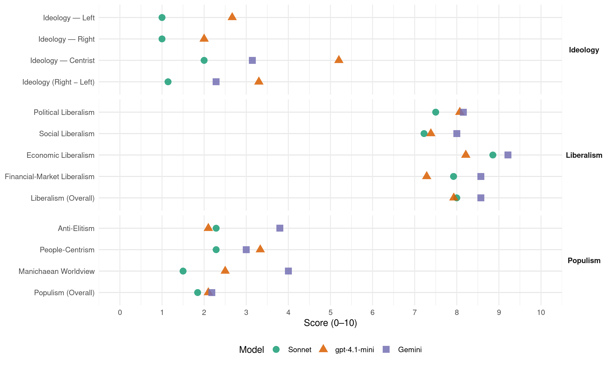

IL (Portugal, 2022)
manifesto_id 35410_202201
Get full text: This site shows derived annotations and short verbatim quotes only. The full manifesto text is © Manifesto Project / WZB — obtain it via manifesto-project.wzb.eu using the manifesto_id above.
Headline scores
| Dimension | Sonnet | gpt-4.1-mini | Gemini |
|---|---|---|---|
| Populism (Overall) | 1.8 | 2.1 | 2.2 |
| Anti-Elitism | 2.3 | 2.1 | 3.8 |
| People-Centrism | 2.3 | 3.3 | 3.0 |
| Manichaean Worldview | 1.5 | 2.5 | 4.0 |
| Ideology (Right − Left) | 1.1 | 3.3 | 2.3 |
| Liberalism (Overall) | 8.0 | 7.9 | 8.6 |
| Political Liberalism | 7.5 | 8.1 | 8.2 |
| Social Liberalism | 7.2 | 7.4 | 8.0 |
| Economic Liberalism | 8.9 | 8.2 | 9.2 |
| Financial-Market Liberalism | 7.9 | 7.3 | 8.6 |
Evidence per dimension
Economic Liberalism
Gemini · score 9.0 · verified · chunk 1
“políticas de cariz liberal”
ciclo de subdesenvolvimento que condena Portugal à estagnação. Precisamos de novas políticas, políticas de cariz liberal que quebrem as amarras
Gemini · score 9.0 · verified · chunk 2
“defensor do Estado de Direito, das liberdades individuais e iniciativa privada”
Afirmar Portugal como: a. Um país europeu e democrático, defensor do Estado de Direito, das liberdades individuais e iniciativa privada.
Gemini · score 9.0 · verified · chunk 3
“simplificação regulatória, subsidiariedade e descentralização”
focar o Estado nas tarefas em que a sua intervenção é efetivamente necessária, numa lógica de simplificação regulatória, subsidiariedade e descentralização de atribuições
Gemini · score 9.0 · verified · chunk 4
“eliminar as barreiras à entrada de novos operadores”
PROMOVER A CONCORRÊNCIA E REMOVER BARREIRAS À ENTRADA NOS SERVIÇOS DE TRANSPORTES COLETIVOS DETIDOS PELO ESTADO OBJETIVOS Melhorar a qualidade e a capacidade do serviço dos transportes coletivos atualmente sob a responsabilidade do Estado, remover barreiras à concorrência, gerar inovação, garantir melhor serviço ao cliente e ao país. PROPOSTA 1. Eliminar as barreiras à entrada de novos operadores ferroviários
Gemini · score 9.0 · verified · chunk 5
“promove a liberalização da saúde em Portugal”
público, privadoou cooperativo. Em paralelo, promove a liberalização da saúde em Portugal, promovendo um vigoroso mercado que atendaàs
Gemini · score 9.0 · verified · chunk 6
“assenta em haver concorrência no mercado”
O vosso modelo de saúde assenta em haver concorrência no mercado de saúde, mas como vamos ter concorrência
Gemini · score 9.0 · verified · chunk 7
“Promover a concorrência na prestação”
Promover a concorrência entre subsistemas saúde. Promover a concorrência na prestação dos cuidados de saúde
Gemini · score 9.0 · verified · chunk 8
“modelos de prestação concorrenciais”
promover a existência de liberdade de escolha no ensino e modelos de prestação concorrenciais de forma a colocar o aluno
Gemini · score 9.0 · verified · chunk 9
“Esta indução de procura irá tornar o mercado em causa mais atrativo”
não conseguem pagar esse acesso, potenciando um aumento efetivo na procura destes serviços. Esta indução de procura irá tornar o mercado em causa mais atrativo, induzindo o surgimento de oferta para lhe
Gemini · score 9.0 · verified · chunk 10
“materializar-se num mercado livre e aberto”
A INICIATIVA LIBERAL DEFENDE QUE O DIREITO À HABITAÇÃO DEVE materializar-se num mercado livre e aberto de habitação
Gemini · score 10.0 · verified · chunk 11
“preços devem ser formados em mercado concorrencial”
Iniciativa Liberal acredita que os preços dos livros devem ser formados em mercado concorrencial. As empresas que operam no mercado
Gemini · score 10.0 · verified · chunk 12
“livre iniciativa, mercados abertos e competitivos”
O ESTADO DEVE SIM ASSEGURAR A LIVRE INICIATIVA, MERCADOS ABERTOS E COMPETITIVOS, AS LIBERDADES
Gemini · score 10.0 · verified · chunk 13
“defende a liberalização da actividade empresarial”
23. HOTELARIA E RESTAURAÇÃO A INICIATIVA LIBERAL DEFENDE A LIBERALIZAÇÃO DA ACTIVIDADE EMPRESARIAL, E DO CHAMADO CAPITALISMO POPULAR
Gemini · score 9.0 · verified · chunk 14
“mobilizadores do poder dos mercados”
liberdades, e mobilizadores do poder dos mercados. RESUMO DAS PROPOSTAS
gpt-4.1-mini · score 9.0 · verified · chunk 1
“Pôr Portugal a Crescer Com menos impostos e maiores salários líquidos”
1 Pôr Portugal a Crescer Com menos impostos e maiores salários líquidos 2 Devolver o poder às pessoas Com mais Liberdade de escolha na educação e um sistema de saúde que funcione quando é preciso
gpt-4.1-mini · score 8.0 · verified · chunk 2
“Portugal é um país europeu e democrático, defensor do Estado de Direito, das liberdades individuais e iniciativa privada”
…OBJETIVOS Afirmar Portugal como: a. Um país europeu e democrático, defensor do Estado de Direito, das liberdades individuais e iniciativa privada. b. Um promotor do multilateralismo, da cooperação e do respeito pelo Direito Internacional…
gpt-4.1-mini · score 8.0 · verified · chunk 3
“Simplificação e redução de carga fiscal”
POR UMA POLÍTICA AGRÍCOLA LIBERAL OBJETIVOS Robustecimento do sector agrícola como fonte de desenvolvimento e crescimento para o país, para que seja reconhecido como atividade económica dinâmica e de valor acrescentado, onde a tecnologia e inovação são novos paradigmas. Ter presente a relevância do seu papel socioeconómico e da preservação da paisagem rural como uma atividade que utiliza eficientemente os recursos, respeitadora do ambiente, criadora de riqueza e postos de trabalho e que, consequentemente, contribua não só para contrariar a desertificação do interior como também para um desenvolvimento mais harmonioso e sustentável do país. Estimular o empreendedorismo rural jovem. Colocar a agricultura no centro da atividade económica corrigindo a balança externa agroalimentar. Reduzir a dependência direta aos apoios comunitários. Sempre que possível, canalizar os apoios comunitários para alterações estruturais do modelo de produção de forma a permitir elevados níveis de competitividade da produção e resiliência aos choques da globalização, climáticos e alteração dos pressupostos da Política Agrícola Comum. PROPOSTA 1. Agilização de procedimentos e redução de redundâncias entre entidades, promovendo eficiências, celeridade e estabilidade em análise de investimentos. 2. Diminuir a burocracia e promover agilização em: a. Licenciamentos; b. Manifestos; c. Guias de transporte (nacionais e internacionais); d. Declarações; e. Candidaturas. f. Simplificação e redução de carga fiscal.
gpt-4.1-mini · score 8.0 · verified · chunk 4
“redução de carga fiscal”
b. Manifestos; c. Guias de transporte (nacionais e internacionais); d. Declarações; e. Candidaturas. f. Simplificação e redução de carga fiscal. 3. ́Rever os objetivos, organização e processos do Ministério da tutela do sector primário de forma que o foco seja o apoio e a resolução de inconformidades agrícolas, ambientais ou financeiras
gpt-4.1-mini · score 7.0 · verified · chunk 5
“Redução da subvenção pública aos partidos políticos”
ALTERAÇÃO À LEI DO FINANCIAMENTO DOS PARTIDOS POLÍTICOS Redução da subvenção pública aos partidos políticos. Simplificação da Lei n.º 19/2003, de 20 de junho. PROPOSTA 1. Limitação da subvenção pública dos atuais 1/135 IAS para 1/220 IAS – considerando o valor do IAS, de cerca de 3,20€ (três euros e vinte cêntimos) para cerca de 2 € (dois euros) por voto - que significará uma poupança aproximada de 4 300 000,00 € (quatro milhões e trezentos mil euros) por ano.
gpt-4.1-mini · score 8.0 · verified · chunk 6
“Os prestadores terão todos o mesmo papel: fornecer serviços de saúde de elevada qualidade”
…Os diferentes financiadores poderão fazer acordo com qualquer prestador, seja qual for a sua natureza. Os prestadores terão todos o mesmo papel: fornecer serviços de saúde de elevada qualidade aos seus utentes….
gpt-4.1-mini · score 8.0 · verified · chunk 7
“Promover a concorrência entre subsistemas saúde”
BASE V – LIBERDADE DE ESCOLHA E CONCORRÊNCIA Promover a liberdade de escolha individual das opções de cuidados de saúde. Promover a concorrência entre subsistemas saúde. Promover a concorrência na prestação dos cuidados de saúde nas diferentes redes de prestação de serviços de saúde.
gpt-4.1-mini · score 7.0 · verified · chunk 8
“Estabelecer um regime de cheque-ensino, em que as pessoas podem escolher a escola, e o Estado paga às escolas de acordo com os alunos que as frequentem”
…Garantir, a todo os alunos e famílias, a liberdade de escolha da escola do ensino básico e secundário. PROPOSTA 1. Estabelecer um regime de cheque-ensino, em que as pessoas podem escolher a escola, e o Estado paga às escolas de acordo com os alunos que as frequentem. Neste modelo, a escola pública coexiste com escolas privadas e sociais que queiram aderir ao sistema…
gpt-4.1-mini · score 8.0 · verified · chunk 9
“mercado de trabalho, criação de riqueza, dinamizar a economia”
Dinamizar a economia com geração de capital para investimento e criação de riqueza. Promover liberdade de escolha dos cidadãos em relação às suas opções de reforma futura.
gpt-4.1-mini · score 9.0 · verified · chunk 10
““Redução da taxa de tributação em sede de IRS aplicada ao arrendamento… constituirá um incentivo relevante para que os proprietários de imóveis vejam no arrendamento uma boa alternativa””
…Eliminação do IMT na compra de habitação própria e permanente… Redução da taxa de tributação em sede de IRS aplicada ao arrendamento (bem como outros rendimentos) para 15%, o que constituirá um incentivo relevante para que os proprietários de imóveis vejam no arrendamento uma boa alternativa…
gpt-4.1-mini · score 9.0 · verified · chunk 11
“mercado livreiro, concorrência, investimento empresarial, desregulamentação”
…A proposta de revogação da Lei do Preço Fixo do Livro visa promover o mercado livreiro, concorrência, investimento empresarial e desregulamentação para maior eficiência…
gpt-4.1-mini · score 9.0 · verified · chunk 12
“Simplificar e desburocratizar a regulação aplicável aos diversos setores da economia”
…Simplificar e desburocratizar a regulação aplicável aos diversos setores da economia, onde for relevante e apropriado, numa lógica de maximização dos benefícios regulatórios e minimização do desperdício; Aproveitar as diversas formas de regulação possíveis da forma mais eficiente…
gpt-4.1-mini · score 9.0 · verified · chunk 13
“A INICIATIVA LIBERAL DEFENDE A LIBERALIZAÇÃO DA ACTIVIDADE EMPRESARIAL”
23. HOTELARIA E RESTAURAÇÃO A INICIATIVA LIBERAL DEFENDE A LIBERALIZAÇÃO DA ACTIVIDADE EMPRESARIAL, E DO CHAMADO CAPITALISMO POPULAR, PELO QUAL AS PESSOAS PODEM INVESTIR AS SUAS POUPANÇAS EM PEQUENOS NEGÓCIOS PARA GARANTIREM FONTES DE RENDIMENTO, E BENEFICIAREM TODA A SOCIEDADE COM NOVOS BENS E SERVIÇOS.
gpt-4.1-mini · score 8.0 · verified · chunk 14
“reduzir a carga fiscal”
num quadro de neutralidade fiscal. Naturalmente, sem prejuízo da necessidade de redução da carga fiscal, que é uma questão paralela. 8. A base contratual como regra permite que a regulamentação seja ela própria discutida e definida pelos principais interessados, contribuindo decisivamente para uma maior racionalidade, maior adesão à realidade e maior apoio social à regulamentação ambiental, do que resultará uma muito maior eficiência na sua aplicação e uma administração pública muito mais eficaz.
Sonnet · score 9.0 · verified · chunk 1
“menos impostos e maiores salários líquidos”
1 Pôr Portugal a Crescer Com menos impostos e maiores salários líquidos
Sonnet · score 8.0 · verified · chunk 2
“simplificação regulatória, subsidiariedade e descentralização”
numa lógica de simplificação regulatória, subsidiariedade e descentralização de atribuições e competências para as regiões autónomas
Sonnet · score 9.0 · verified · chunk 3
“simplificação regulatória, subsidiariedade e descentralização”
Focar o Estado nas tarefas em que a sua intervenção é efetivamente necessária, numa lógica de simplificação regulatória, subsidiariedade e descentralização de atribuições e competências
Sonnet · score 9.0 · verified · chunk 4
“remover barreiras à concorrência, gerar inovação”
Melhorar a qualidade e a capacidade do serviço dos transportes coletivos atualmente sob a responsabilidade do Estado, remover barreiras à concorrência, gerar inovação, garantir melhor serviço ao cliente e ao país
Sonnet · score 9.0 · verified · chunk 5
“concorrência chegará e será um fator”
é indubitável que uma rede moderna, fiável… a concorrência chegará e será um fator mais de angariação de passageiros para a ferrovia
Sonnet · score 9.0 · verified · chunk 6
“concorrência livre entre subsistemas públicos”
A concorrência livre entre subsistemas públicos será o melhor estímulo para que haja eficiência, gerando poupança sem perda
Sonnet · score 9.0 · verified · chunk 7
“Promover a concorrência entre subsistemas saúde”
BASE V – LIBERDADE DE ESCOLHA E CONCORRÊNCIA Promover a concorrência entre subsistemas saúde. Promover a concorrência na prestação
Sonnet · score 8.0 · verified · chunk 8
“competindo pelas preferências dos alunos”
rede descentralizada de escolas, de escolas públicas, privadas e sociais, que proporcione ampla cobertura territorial, colaborando entre si, e competindo pelas preferências dos alunos
Sonnet · score 9.0 · verified · chunk 9
“induzindo o surgimento de oferta para lhe dar resposta”
Esta indução de procura irá tornar o mercado em causa mais atrativo, induzindo o surgimento de oferta para lhe dar resposta. Competirá ao Estado regular essa oferta
Sonnet · score 9.0 · verified · chunk 10
“Redução do IVA da construção imobiliária para habitação”
Redução do IVA da construção imobiliária para habitação de 23% para 6%, com a mesma lógica condicionada que já existe na reabilitação urbana, e fim do AIMI
Sonnet · score 9.0 · verified · chunk 11
“os preços dos livros devem ser formados em mercado concorrencial”
A Iniciativa Liberal acredita que os preços dos livros devem ser formados em mercado concorrencial. As empresas que operam no mercado livreiro devem ser competitivas
Sonnet · score 9.0 · verified · chunk 12
“mercados abertos e competitivos”
O ESTADO DEVE SIM ASSEGURAR A LIVRE INICIATIVA, MERCADOS ABERTOS E COMPETITIVOS, AS LIBERDADES E DIREITOS DOS ENVOLVIDOS.
Sonnet · score 9.0 · verified · chunk 13
“liberalização do sector terá um papel fundamental”
Permitir que o país beneficie da recuperação turística e económica para a qual a liberalização do sector terá um papel fundamental no curto prazo
Sonnet · score 9.0 · verified · chunk 14
“aumentar o grau de concorrência e de inovação no setor”
ajudar a promover a expansão do mercado das plataformas de financiamento colaborativo, ajudando a diversificar a oferta de financiamento no mercado português, a aumentar o grau de concorrência e de inovação no setor
Financial-Market Liberalism
Gemini · score 8.0 · verified · chunk 1
“Melhorar a regulação bancária”
Revisão da Tributação Autónoma 464 Revisão e progressiva abolição do Imposto do Selo 467 Reforma do IRC e eliminação da derrama estadual 473 20. BUROCRACIA 477 Choque Desburocrático 479 21. REGULAÇÃO 485 Por entidades reguladoras verdadeiramente independentes e eficazes 488 Simplificar a regulação, torná-la eficaz e eficiente 492 Melhorar a regulação bancária 498 22. EMPRESAS PÚBLICAS
Gemini · score 8.0 · verified · chunk 4
“construção de mercados financeiros como forma de diversificação de risco”
Os países de inspiração anglo-saxónica têm preferido a construção de mercados financeiros como forma de diversificação de risco. São opções possíveis de ser seguidas Portugal
Gemini · score 8.0 · verified · chunk 6
“cumprir os mesmos rácios de capital”
privados, e devia ser obrigado a cumprir os mesmos rácios de capital, de solvência e ter os mesmos deveres
Gemini · score 8.0 · verified · chunk 11
“Adicional de solidariedade sobre o setor bancário”
sobre a indústria farmacêutica Contribuição sobre dispositivos médicos Adicional de solidariedade sobre o setor bancário Taxa de atribuição de títulos
Gemini · score 9.0 · verified · chunk 12
“harmonizar a legislação bancária portuguesa”
Harmonizar a legislação bancária portuguesa com os padrões impostos pela legislação europeia
Gemini · score 10.0 · verified · chunk 13
“modernizar o seu mercado de capitais”
26. MERCADO DE CAPITAIS A INICIATIVA LIBERAL DEFENDE QUE PORTUGAL DEVE MODERNIZAR O SEU MERCADO DE CAPITAIS, PARA QUE AS EMPRESAS PORTUGUESAS
Gemini · score 9.0 · verified · chunk 14
“desenvolvimento do mercado do financiamento colaborativo”
limitar arbitrariamente o nível de investimento que pode ocorrer por via da plataforma e limitar o desenvolvimento do mercado do financiamento colaborativo. Os investidores não se
gpt-4.1-mini · score 8.0 · verified · chunk 1
“Dinamização dos mercados de capitais”
26. MERCADO DE CAPITAIS 563 Dinamização dos mercados de capitais 565 Promoção da utilização de plataformas de financiamento colaborativo
gpt-4.1-mini · score 6.0 · verified · chunk 6
“Os subsistemas deverão respeitar requisitos prudenciais rigorosos, desde logo relativos a requisitos de capital”
…Os subsistemas deverão respeitar requisitos prudenciais rigorosos, desde logo relativos a requisitos de capital e a requisitos de transparência, ao nível do exigido atualmente às seguradoras….
gpt-4.1-mini · score 7.0 · verified · chunk 9
“mecanismo de capitalização de poupanças, fiscalmente eficientes”
Criação de um novo pilar no sistema nacional de pensões de reforma, alicerçado num mecanismo de capitalização de poupanças. Serão fiscalmente eficientes, feitas por dedução à remuneração bruta sem aplicação de quaisquer impostos sobre rendimento, taxas sociais ou similares.
gpt-4.1-mini · score 7.0 · verified · chunk 11
“financiamento, crédito, mercado, transparência, regulação prudencial”
…O manifesto defende regulação prudencial que permita o funcionamento do mercado financeiro, com transparência e acesso ao crédito…
gpt-4.1-mini · score 8.0 · verified · chunk 12
“Harmonizar a legislação bancária portuguesa com os padrões impostos pela legislação europeia”
…Melhorar a regulação bancária. Harmonizar a legislação bancária portuguesa com os padrões impostos pela legislação europeia, com cariz de urgência; Robustecer a legislação bancária portuguesa, à luz do debate público em torno desta matéria e das conclusões das comissões parlamentares de inquérito relevantes…
gpt-4.1-mini · score 8.0 · verified · chunk 13
“dinamização dos mercados de capitais”
26. MERCADO DE CAPITAIS A INICIATIVA LIBERAL DEFENDE QUE PORTUGAL DEVE MODERNIZAR O SEU MERCADO DE CAPITAIS, PARA QUE AS EMPRESAS PORTUGUESAS POSSAM MELHOR CAPITALIZAR-SE E COMPETIR NOS MERCADOS GLOBAIS.
gpt-4.1-mini · score 7.0 · verified · chunk 14
“supervisão destas plataformas por parte da CMVM, em defesa dos interesses dos investidores”
Por fim, mantém-se a supervisão destas plataformas por parte da CMVM, em defesa dos interesses dos investidores. Remover os limites previstos na lei não vai prejudicar os investidores? Remover os limites vai permitir aos investidores decidir, para si, de acordo com as suas circunstâncias concretas, como investir o seu dinheiro, mantendo-se outras proteções relevantes relativas a assimetrias de informação e proteção contra fraudes. Vai também ajudar a promover a expansão do mercado das plataformas de financiamento colaborativo, ajudando a diversificar a oferta de financiamento no mercado português, a aumentar o grau de concorrência e de inovação no setor. Os investidores poderão aceder a um maior número de plataformas, o que lhes oferecerá maior poder de escolha de quais os projetos que melhor se adequam aos seus interesses de investimento. Por fim, mantém-se a supervisão destas plataformas por parte da CMVM, em defesa dos interesses dos investidores.
Sonnet · score 8.0 · verified · chunk 1
“Privatização da Caixa Geral de Depósitos”
Privatização da Caixa Geral de Depósitos - CGD e transparência do Banco de Fomento
Sonnet · score 7.0 · verified · chunk 2
“promoção de concorrência saudável”
A promoção de concorrência saudável e o combate às práticas ilícitas na contratação pública podem gerar poupanças substanciais
Sonnet · score 7.0 · verified · chunk 3
“prevenção do branqueamento de capitais e combate ao financiamento do terrorismo”
bem como uma função de prevenção do branqueamento de capitais e combate ao financiamento do terrorismo, e com suficiente poder e ascendente sobre outras unidades operacionais para serem efetivos.
Sonnet · score 7.0 · verified · chunk 4
“criação de mercados futuros nacionais e ou regionais”
Esses mecanismos poderão passar por: alteração do modelo de seguros, revisão e alargamento de um fundo de catástrofe climatérica, criação de mercados futuros nacionais e ou regionais, comunicação cuidada dos indicadores de preço
Sonnet · score 8.0 · verified · chunk 5
“cumprir os mesmos rácios de capital, de solvência”
a ADSE não está solvente… devia ser obrigado a cumprir os mesmos rácios de capital, de solvência e ter os mesmos deveres de transparência e divulgação de informação
Sonnet · score 8.0 · verified · chunk 6
“requisitos de capital e deveres de transparência”
As cativas têm requisitos mais leves, mas são obrigados a respeitar requisitos de capital e deveres de transparência.
Sonnet · score 7.0 · verified · chunk 7
“regulação prudencial e comportamental adequada”
BASE XV – SEGUROS DE SAÚDE Sujeitar os seguros de saúde a regulação prudencial e comportamental adequada, e a um regime de supervisão intrusivo e independente.
Sonnet · score 8.0 · verified · chunk 9
“livre escolha pelo trabalhador da entidade gestora”
Tendencialmente, livre escolha pelo trabalhador da entidade gestora da capitalização de poupança.
Sonnet · score 8.0 · verified · chunk 10
“atrair capital para o sector, por exemplo fundos de pensões”
Para se conseguir criar habitação a preços acessíveis é essencial atrair capital para o sector, por exemplo fundos de pensões, que pela sua natureza procuram rentabilidades e rendimentos estáveis ao longo de 30 ou 40 anos.
Sonnet · score 8.0 · verified · chunk 11
“adicional de solidariedade sobre o setor bancário”
Pretende-se eliminar o adicional de solidariedade sobre o setor bancário, uma contribuição injustificada, numa altura particularmente complicada, sobre um setor que em Portugal já está sujeito a diversos impostos
Sonnet · score 9.0 · verified · chunk 12
“Privatizar a Caixa Geral de Depósitos”
Privatizar a Caixa Geral de Depósitos (CGD) Retirar o Estado do sistema financeiro: limitar radicalmente o controlo partidário da economia portuguesa
Sonnet · score 9.0 · verified · chunk 13
“modernizar o seu mercado de capitais”
A INICIATIVA LIBERAL DEFENDE QUE PORTUGAL DEVE MODERNIZAR O SEU MERCADO DE CAPITAIS, PARA QUE AS EMPRESAS PORTUGUESAS POSSAM MELHOR CAPITALIZAR-SE
Sonnet · score 9.0 · verified · chunk 14
“Remover os limites ao investimento previstos na lei”
Remover os limites ao investimento previstos na lei não vai levar a que projetos possam receber investimento a mais, que depois não devolvem aos investidores?
Political Liberalism
Gemini · score 9.0 · verified · chunk 1
“escrutínio do poder político”
poder das pessoas Com descentralização e mais escrutínio do poder político 5 Emagrecer o Estado Libertando
Gemini · score 9.0 · verified · chunk 2
“A Justiça é uma função essencial do Estado de Direito Democrático”
Não existe verdadeira Justiça se alguns dos cidadãos não conseguem aceder-lhe – o que, sabe-se, atualmente sucede em Portugal. Uma Justiça acessível a todos é fundamental, até para que os cidadãos possam combater as ilegalidades do próprio Estado
Gemini · score 8.0 · verified · chunk 3
“transparência e os mecanismos de prestação de contas”
Qual a relevância da transparência e os mecanismos de prestação de contas? A transparência e a prestação de contas são
Gemini · score 8.0 · verified · chunk 4
“assegure a justa representação proporcional de partidos”
A INICIATIVA LIBERAL DEFENDE QUE PORTUGAL PRECISA DE UM SISTEMA ELEITORAL QUE ASSEGURE A JUSTA REPRESENTAÇÃO PROPORCIONAL DE PARTIDOS E MOVIMENTOS PARTIDOS NA ASSEMBLEIA DA REPÚBLICA
Gemini · score 8.0 · verified · chunk 5
“assegure a justa representação proporcional de partidos”
A INICIATIVA LIBERAL DEFENDE QUE PORTUGAL PRECISA DE UM SISTEMA ELEITORAL QUE ASSEGURE A JUSTA REPRESENTAÇÃO PROPORCIONAL DE PARTIDOS E MOVIMENTOS PARTIDOS NA ASSEMBLEIA DA
Gemini · score 8.0 · verified · chunk 6
“defende a liberdade individual e a igualdade”
A Iniciativa Liberal defende a liberdade individual e a igualdade de oportunidades. Ambos os princípios apontam para
Gemini · score 8.0 · verified · chunk 7
“Direito à proteção da saúde com respeito”
de acordo com as redes de prestação; Direito à proteção da saúde com respeito pelos princípios da igualdade
Gemini · score 8.0 · verified · chunk 8
“essenciais à democracia liberal”
A Educação e a literacia são essenciais à democracia liberal. Trazem ganhos elevados para os indivíduos
Gemini · score 8.0 · verified · chunk 9
“A Educação e a literacia são um pilar da democracia liberal”
A Educação e a literacia são um pilar da democracia liberal, são essenciais para colocar o “elevador social” a
Gemini · score 8.0 · verified · chunk 10
“descentralizar as competências de gestão”
o de gestão que torne o sector do Património Cultural… descentralizar as competências de gestão nas instituições locais
Gemini · score 8.0 · verified · chunk 11
“independência em relação ao Governo”
ou seja, gozam de uma grande independência em relação ao Governo. Já na Alemanha é uma grande Fundação
Gemini · score 8.0 · verified · chunk 12
“parecer da Assembleia da República”
Sim, o parecer da Assembleia da República manter-se-ia, como instrumento indispensável
Gemini · score 8.0 · verified · chunk 13
“num estado de Direito como o nosso”
garantir que o Estado é ressarcido pelo dano causado, num estado de Direito como o nosso tal faz-se não via inversão do ónus da prova
gpt-4.1-mini · score 9.0 · verified · chunk 1
“Garantir a Divulgação Digital das Decisões Judiciais”
Garantir que todas as decisões judiciais tomadas pelos tribunais portugueses, incluindo os tribunais de primeira instância e tribunais superiores, são publicadas através da Internet, de forma acessível e transparente.
gpt-4.1-mini · score 9.0 · verified · chunk 2
“Uma Justiça acessível a todos é fundamental, até para que os cidadãos possam combater as ilegalidades do próprio Estado”
…Não existe verdadeira Justiça se alguns dos cidadãos não conseguem aceder-lhe – o que, sabe-se, atualmente sucede em Portugal. Uma Justiça acessível a todos é fundamental, até para que os cidadãos possam combater as ilegalidades do próprio Estado, e possam fazer valer os seus direitos individuais…
gpt-4.1-mini · score 8.0 · verified · chunk 3
“transparência e mecanismos de prestação de contas são essenciais numa democracia liberal”
Qual a relevância da transparência e dos mecanismos de prestação de contas? A transparência e a prestação de contas são essenciais numa democracia liberal. Permitem avaliar em que medida se encontram a ser cumpridos os objetivos de política pública associados a uma determinada entidade, e averiguar se esta se encontra a ser adequadamente gerida.
gpt-4.1-mini · score 7.0 · verified · chunk 4
“defender que o sistema de proteção civil deve ser despolitizado”
A INICIATIVA LIBERAL DEFENDER QUE A PROTEÇÃO DE VIDAS E PROPRIEDADE É UMA DAS FUNÇÕES ESSENCIAIS DO ESTADO, E DEFENDE QUE O SISTEMA DE PROTEÇÁO CIVIL DEVE SER DESPOLITIZADO, DESBUROCRATIZADO, E CAPACITADO PARA MELHOR DESEMPENHAR AS SUAS FUNÇÕES
gpt-4.1-mini · score 8.0 · verified · chunk 5
“defende a democracia, direitos e liberdade de expressão”
A INICIATIVA LIBERAL DEFENDE A LIBERDADE DE EXPRESSÃO E A LIBERDADE DE IMPRENSA, E PRETENDE QUE A COMUNICAÇÃO SOCIAL EM PORTUGAL SEJA LIVRE E INDEPENDENTE DO PODER POLÍTICO.
gpt-4.1-mini · score 8.0 · verified · chunk 6
“Todos têm direito à proteção da saúde; Através de um serviço nacional de saúde universal”
…A proposta da Iniciativa Liberal garante que: Todos têm direito à proteção da saúde; Através de um serviço nacional de saúde universal; Que tem em conta as condições económicas e sociais dos cidadãos,…
gpt-4.1-mini · score 9.0 · verified · chunk 7
“Garantir acesso universal a serviços de saúde de qualidade”
BASE I – ACESSO UNIVERSAL Garantir acesso universal a serviços de saúde de qualidade em território português a todos os residentes, ou nacionais não residentes desde que façam a contribuição necessária.
gpt-4.1-mini · score 8.0 · verified · chunk 8
“A Educação e a literacia são essenciais à democracia liberal”
…A Educação e a literacia são essenciais à democracia liberal. Trazem ganhos elevados para os indivíduos e para a sociedade como um todo. A Educação é essencial para formar indivíduos livres e para promover a igualdade de oportunidades…
gpt-4.1-mini · score 8.0 · verified · chunk 9
“políticas públicas devem assentar numa cultura de melhoria continua”
As políticas públicas na área da Educação devem assentar numa cultura de melhoria continua, aprendizagem e desempenho elevado. As políticas de Educação devem permitir que o setor seja suficientemente robusto e flexível para se adaptar à mudança de forma atempada e proativa, atendendo aos interesses dos alunos e da sociedade.
gpt-4.1-mini · score 8.0 · verified · chunk 10
““Todos têm direito, para si e para a sua família, a uma habitação de dimensão adequada, em condições de higiene e conforto e que preserve a intimidade pessoal e a privacidade familiar.””
…ajudar a cumprir o desígnio nacional presente na Constituição Portuguesa: “Todos têm direito, para si e para a sua família, a uma habitação de dimensão adequada, em condições de higiene e conforto e que preserve a intimidade pessoal e a privacidade familiar.” Para assegurar o direito à habitação, incumbe ao Estado: Programar e executar uma política de habitação inserida em planos de ordenamento geral do território…
gpt-4.1-mini · score 8.0 · verified · chunk 11
“democracia, direitos, eleições, tribunais, media”
…O manifesto defende a importância da democracia, direitos, eleições, tribunais, media e instituições políticas para garantir a liberdade e o funcionamento do Estado…
gpt-4.1-mini · score 8.0 · verified · chunk 12
“Assegurar que as entidades reguladoras independentes dispõem da independência”
…deve ser independente, despolitizada e desburocratizada. Para tal é preciso reformar o modelo de regulação, impor separação entre o poder político e dirigentes dos reguladores, simplificar regulamentos, e tornar a sua operação e desempenho muito mais transparentes. Resumo das propostas por entidades reguladoras verdadeiramente independentes e eficazes: Assegurar que as entidades reguladoras independentes dispõem da independência e dos meios necessários para o exercício efetivo, imparcial e tempestivo das suas funções…
gpt-4.1-mini · score 8.0 · verified · chunk 13
“Dar a conhecer aos trabalhadores o real valor de custo da fiscalidade”
Dar a conhecer aos trabalhadores o real valor de custo da fiscalidade, assim como as contribuições efetivas para o Estado, do trabalho por si produzido. Aumentar a exigência dos cidadãos perante os serviços prestados pelo Estado.
gpt-4.1-mini · score 7.0 · verified · chunk 14
“mantém-se a supervisão destas plataformas por parte da CMVM, em defesa dos interesses dos investidores”
Por fim, mantém-se a supervisão destas plataformas por parte da CMVM, em defesa dos interesses dos investidores. Remover os limites previstos na lei não vai prejudicar os investidores? Remover os limites vai permitir aos investidores decidir, para si, de acordo com as suas circunstâncias concretas, como investir o seu dinheiro, mantendo-se outras proteções relevantes relativas a assimetrias de informação e proteção contra fraudes. Vai também ajudar a promover a expansão do mercado das plataformas de financiamento colaborativo, ajudando a diversificar a oferta de financiamento no mercado português, a aumentar o grau de concorrência e de inovação no setor. Os investidores poderão aceder a um maior número de plataformas, o que lhes oferecerá maior poder de escolha de quais os projetos que melhor se adequam aos seus interesses de investimento. Por fim, mantém-se a supervisão destas plataformas por parte da CMVM, em defesa dos interesses dos investidores.
Sonnet · score 9.0 · verified · chunk 1
“democracia liberal e Direitos Humanos”
Portugal deve conduzir uma política externa, no respeito da democracia liberal e Direitos Humanos, de boa-vizinhança
Sonnet · score 8.0 · verified · chunk 2
“Estado de Direito Democrático”
A Justiça é uma função essencial do Estado de Direito Democrático. Não existe verdadeira Justiça se alguns dos cidadãos não conseguem aceder-lhe
Sonnet · score 8.0 · verified · chunk 3
“transparência e a prestação de contas são essenciais numa democracia liberal”
A transparência e a prestação de contas são essenciais numa democracia liberal. Permitem avaliar em que medida se encontram a ser cumpridos os objetivos de política pública associados a uma determinada entidade
Sonnet · score 8.0 · verified · chunk 4
“sistema eleitoral que assegure a justa representação proporcional”
A INICIATIVA LIBERAL DEFENDE QUE PORTUGAL PRECISA DE UM SISTEMA ELEITORAL QUE ASSEGURE A JUSTA REPRESENTAÇÃO PROPORCIONAL DE PARTIDOS E MOVIMENTOS PARTIDOS NA ASSEMBLEIA DA REPÚBLICA
Sonnet · score 8.0 · verified · chunk 5
“justa representação proporcional de partidos”
PORTUGAL PRECISA DE UM SISTEMA ELEITORAL QUE ASSEGURE A JUSTA REPRESENTAÇÃO PROPORCIONAL DE PARTIDOS E MOVIMENTOS PARTIDOS NA ASSEMBLEIA DA REPÚBLICA
Sonnet · score 7.0 · verified · chunk 6
“maior transparência e maior capacidade para antecipar”
havendo maior transparência e maior capacidade para antecipar do problema, será possível fazer uma melhor gestão do mesmo
Sonnet · score 8.0 · verified · chunk 7
“independência financeira, administrativa e política da Entidade Reguladora”
Assegurar a independência financeira, administrativa e política da Entidade Reguladora da Saúde e do Infarmed
Sonnet · score 7.0 · verified · chunk 8
“despolitizar e profissionalizar a estrutura”
simplificar, descentralizar, despolitizar e profissionalizar a estrutura e o funcionamento do Ministério da Educação, para garantir maior racionalidade
Sonnet · score 8.0 · verified · chunk 9
“A Educação e a literacia são um pilar da democracia liberal”
A Educação e a literacia são um pilar da democracia liberal, são essenciais para colocar o ‘elevador social’ a funcionar
Sonnet · score 7.0 · verified · chunk 10
“Promover um regime democrático transparente e livre”
Promover um regime democrático transparente e livre nos Conselhos de Administração e na gestão.
Sonnet · score 6.0 · verified · chunk 11
“independência em relação ao Governo”
como a British Library, o British Museum ou a National Gallery estão classificadas como ‘Non-departmental public body’, ou seja, gozam de uma grande independência em relação ao Governo
Sonnet · score 7.0 · verified · chunk 12
“parecer da Assembleia da República manter-se-ia”
Sim, o parecer da Assembleia da República manter-se-ia, como instrumento indispensável de escrutínio político.
Sonnet · score 7.0 · verified · chunk 13
“princípio de presunção de inocência”
constitui não apenas uma inversão do ónus da prova e desrespeito total pelo princípio de presunção de inocência, como condiciona fortemente
Sonnet · score 7.0 · verified · chunk 14
“supervisão destas plataformas por parte da CMVM”
mantém-se a supervisão destas plataformas por parte da CMVM, em defesa dos interesses dos investidores
Liberalism (Overall)
Gemini · score 9.0 · verified · chunk 1
“políticas de cariz liberal”
ciclo de subdesenvolvimento que condena Portugal à estagnação. Precisamos de novas políticas, políticas de cariz liberal que quebrem as amarras
Gemini · score 9.0 · verified · chunk 2
“defensor do Estado de Direito, das liberdades individuais e iniciativa privada”
Afirmar Portugal como: a. Um país europeu e democrático, defensor do Estado de Direito, das liberdades individuais e iniciativa privada.
Gemini · score 8.0 · verified · chunk 3
“simplificação regulatória, subsidiariedade e descentralização”
focar o Estado nas tarefas em que a sua intervenção é efetivamente necessária, numa lógica de simplificação regulatória, subsidiariedade e descentralização de atribuições
Gemini · score 8.0 · verified · chunk 4
“eliminar as barreiras à entrada de novos operadores”
PROMOVER A CONCORRÊNCIA E REMOVER BARREIRAS À ENTRADA NOS SERVIÇOS DE TRANSPORTES COLETIVOS DETIDOS PELO ESTADO OBJETIVOS Melhorar a qualidade e a capacidade do serviço dos transportes coletivos atualmente sob a responsabilidade do Estado, remover barreiras à concorrência, gerar inovação, garantir melhor serviço ao cliente e ao país. PROPOSTA 1. Eliminar as barreiras à entrada de novos operadores ferroviários
Gemini · score 8.0 · verified · chunk 5
“promove a liberalização da saúde em Portugal”
público, privadoou cooperativo. Em paralelo, promove a liberalização da saúde em Portugal, promovendo um vigoroso mercado que atendaàs
Gemini · score 8.0 · verified · chunk 6
“soluções liberais na área social”
Não há problema cultural em Portugal para soluções liberais na área social e na área de saúde.
Gemini · score 8.0 · verified · chunk 7
“Promover a concorrência na prestação”
Promover a concorrência entre subsistemas saúde. Promover a concorrência na prestação dos cuidados de saúde
Gemini · score 8.0 · verified · chunk 8
“essenciais à democracia liberal”
A Educação e a literacia são essenciais à democracia liberal. Trazem ganhos elevados para os indivíduos
Gemini · score 9.0 · verified · chunk 9
“A Educação e a literacia são um pilar da democracia liberal”
A Educação e a literacia são um pilar da democracia liberal, são essenciais para colocar o “elevador social” a
Gemini · score 9.0 · verified · chunk 10
“materializar-se num mercado livre e aberto”
A INICIATIVA LIBERAL DEFENDE QUE O DIREITO À HABITAÇÃO DEVE materializar-se num mercado livre e aberto de habitação
Gemini · score 9.0 · verified · chunk 11
“preços devem ser formados em mercado concorrencial”
Iniciativa Liberal acredita que os preços dos livros devem ser formados em mercado concorrencial. As empresas que operam no mercado
Gemini · score 9.0 · verified · chunk 12
“livre iniciativa, mercados abertos e competitivos”
O ESTADO DEVE SIM ASSEGURAR A LIVRE INICIATIVA, MERCADOS ABERTOS E COMPETITIVOS, AS LIBERDADES
Gemini · score 9.0 · verified · chunk 13
“defende a liberalização da actividade empresarial”
23. HOTELARIA E RESTAURAÇÃO A INICIATIVA LIBERAL DEFENDE A LIBERALIZAÇÃO DA ACTIVIDADE EMPRESARIAL, E DO CHAMADO CAPITALISMO POPULAR
Gemini · score 9.0 · verified · chunk 14
“mobilizadores do poder dos mercados”
liberdades, e mobilizadores do poder dos mercados. RESUMO DAS PROPOSTAS
gpt-4.1-mini · score 9.0 · verified · chunk 1
“Garantir a Divulgação Digital das Decisões Judiciais”
Garantir que todas as decisões judiciais tomadas pelos tribunais portugueses, incluindo os tribunais de primeira instância e tribunais superiores, são publicadas através da Internet, de forma acessível e transparente.
gpt-4.1-mini · score 9.0 · verified · chunk 2
“Uma Justiça acessível a todos é fundamental, até para que os cidadãos possam combater as ilegalidades do próprio Estado”
…Não existe verdadeira Justiça se alguns dos cidadãos não conseguem aceder-lhe – o que, sabe-se, atualmente sucede em Portugal. Uma Justiça acessível a todos é fundamental, até para que os cidadãos possam combater as ilegalidades do próprio Estado, e possam fazer valer os seus direitos individuais…
gpt-4.1-mini · score 8.0 · verified · chunk 3
“transparência e mecanismos de prestação de contas são essenciais numa democracia liberal”
Qual a relevância da transparência e dos mecanismos de prestação de contas? A transparência e a prestação de contas são essenciais numa democracia liberal. Permitem avaliar em que medida se encontram a ser cumpridos os objetivos de política pública associados a uma determinada entidade, e averiguar se esta se encontra a ser adequadamente gerida.
gpt-4.1-mini · score 8.0 · verified · chunk 4
“defender que o sistema de proteção civil deve ser despolitizado”
A INICIATIVA LIBERAL DEFENDER QUE A PROTEÇÃO DE VIDAS E PROPRIEDADE É UMA DAS FUNÇÕES ESSENCIAIS DO ESTADO, E DEFENDE QUE O SISTEMA DE PROTEÇÁO CIVIL DEVE SER DESPOLITIZADO, DESBUROCRATIZADO, E CAPACITADO PARA MELHOR DESEMPENHAR AS SUAS FUNÇÕES
gpt-4.1-mini · score 6.0 · verified · chunk 5
“Redução da subvenção pública aos partidos políticos”
ALTERAÇÃO À LEI DO FINANCIAMENTO DOS PARTIDOS POLÍTICOS Redução da subvenção pública aos partidos políticos. Simplificação da Lei n.º 19/2003, de 20 de junho. PROPOSTA 1. Limitação da subvenção pública dos atuais 1/135 IAS para 1/220 IAS – considerando o valor do IAS, de cerca de 3,20€ (três euros e vinte cêntimos) para cerca de 2 € (dois euros) por voto - que significará uma poupança aproximada de 4 300 000,00 € (quatro milhões e trezentos mil euros) por ano.
gpt-4.1-mini · score 7.0 · verified · chunk 6
“Todos têm direito à proteção da saúde; Através de um serviço nacional de saúde universal”
…A proposta da Iniciativa Liberal garante que: Todos têm direito à proteção da saúde; Através de um serviço nacional de saúde universal; Que tem em conta as condições económicas e sociais dos cidadãos,…
gpt-4.1-mini · score 9.0 · verified · chunk 7
“Garantir acesso universal a serviços de saúde de qualidade”
BASE I – ACESSO UNIVERSAL Garantir acesso universal a serviços de saúde de qualidade em território português a todos os residentes, ou nacionais não residentes desde que façam a contribuição necessária.
gpt-4.1-mini · score 8.0 · verified · chunk 8
“A Educação e a literacia são essenciais à democracia liberal”
…A Educação e a literacia são essenciais à democracia liberal. Trazem ganhos elevados para os indivíduos e para a sociedade como um todo. A Educação é essencial para formar indivíduos livres e para promover a igualdade de oportunidades…
gpt-4.1-mini · score 8.0 · verified · chunk 9
“políticas públicas devem assentar numa cultura de melhoria continua”
As políticas públicas na área da Educação devem assentar numa cultura de melhoria continua, aprendizagem e desempenho elevado. As políticas de Educação devem permitir que o setor seja suficientemente robusto e flexível para se adaptar à mudança de forma atempada e proativa, atendendo aos interesses dos alunos e da sociedade.
gpt-4.1-mini · score 8.0 · verified · chunk 10
““Redução da taxa de tributação em sede de IRS aplicada ao arrendamento… constituirá um incentivo relevante para que os proprietários de imóveis vejam no arrendamento uma boa alternativa””
…Eliminação do IMT na compra de habitação própria e permanente… Redução da taxa de tributação em sede de IRS aplicada ao arrendamento (bem como outros rendimentos) para 15%, o que constituirá um incentivo relevante para que os proprietários de imóveis vejam no arrendamento uma boa alternativa…
gpt-4.1-mini · score 8.0 · verified · chunk 11
“mercado livreiro, concorrência, investimento empresarial, desregulamentação”
…A proposta de revogação da Lei do Preço Fixo do Livro visa promover o mercado livreiro, concorrência, investimento empresarial e desregulamentação para maior eficiência…
gpt-4.1-mini · score 8.0 · verified · chunk 12
“Simplificar e desburocratizar a regulação aplicável aos diversos setores da economia”
…Simplificar e desburocratizar a regulação aplicável aos diversos setores da economia, onde for relevante e apropriado, numa lógica de maximização dos benefícios regulatórios e minimização do desperdício; Aproveitar as diversas formas de regulação possíveis da forma mais eficiente…
gpt-4.1-mini · score 8.0 · verified · chunk 13
“A INICIATIVA LIBERAL DEFENDE A LIBERALIZAÇÃO DA ACTIVIDADE EMPRESARIAL”
23. HOTELARIA E RESTAURAÇÃO A INICIATIVA LIBERAL DEFENDE A LIBERALIZAÇÃO DA ACTIVIDADE EMPRESARIAL, E DO CHAMADO CAPITALISMO POPULAR, PELO QUAL AS PESSOAS PODEM INVESTIR AS SUAS POUPANÇAS EM PEQUENOS NEGÓCIOS PARA GARANTIREM FONTES DE RENDIMENTO, E BENEFICIAREM TODA A SOCIEDADE COM NOVOS BENS E SERVIÇOS.
gpt-4.1-mini · score 7.0 · verified · chunk 14
“mantém-se a supervisão destas plataformas por parte da CMVM, em defesa dos interesses dos investidores”
Por fim, mantém-se a supervisão destas plataformas por parte da CMVM, em defesa dos interesses dos investidores. Remover os limites previstos na lei não vai prejudicar os investidores? Remover os limites vai permitir aos investidores decidir, para si, de acordo com as suas circunstâncias concretas, como investir o seu dinheiro, mantendo-se outras proteções relevantes relativas a assimetrias de informação e proteção contra fraudes. Vai também ajudar a promover a expansão do mercado das plataformas de financiamento colaborativo, ajudando a diversificar a oferta de financiamento no mercado português, a aumentar o grau de concorrência e de inovação no setor. Os investidores poderão aceder a um maior número de plataformas, o que lhes oferecerá maior poder de escolha de quais os projetos que melhor se adequam aos seus interesses de investimento. Por fim, mantém-se a supervisão destas plataformas por parte da CMVM, em defesa dos interesses dos investidores.
Sonnet · score 9.0 · verified · chunk 1
“políticas de cariz liberal que quebrem as amarras”
Precisamos de novas políticas, políticas de cariz liberal que quebrem as amarras que impedem os portugueses de mostrar o melhor
Sonnet · score 8.0 · verified · chunk 2
“defensor do Estado de Direito, das liberdades individuais e iniciativa privada”
Um país europeu e democrático, defensor do Estado de Direito, das liberdades individuais e iniciativa privada
Sonnet · score 8.0 · verified · chunk 3
“maximização da liberdade individual e da igualdade”
numa lógica de simplificação regulatória, subsidiariedade e descentralização de atribuições e competências para as regiões autónomas e para as autarquias locais, bem como de maximização da liberdade individual e da igualdade de oportunidades.
Sonnet · score 8.0 · verified · chunk 4
“remover barreiras à concorrência, gerar inovação”
Melhorar a qualidade e a capacidade do serviço dos transportes coletivos atualmente sob a responsabilidade do Estado, remover barreiras à concorrência, gerar inovação, garantir melhor serviço ao cliente e ao país
Sonnet · score 8.0 · verified · chunk 5
“liberdade de escolha e concorrência”
ROTEIRO PARA UMA NOVA LEI DE BASES DA SAÚDE… Base V – Liberdade de escolha e concorrência
Sonnet · score 8.0 · verified · chunk 6
“concorrência livre entre subsistemas públicos”
A concorrência livre entre subsistemas públicos será o melhor estímulo para que haja eficiência, gerando poupança sem perda
Sonnet · score 8.0 · verified · chunk 7
“Promover a concorrência entre subsistemas saúde”
BASE V – LIBERDADE DE ESCOLHA E CONCORRÊNCIA Promover a concorrência entre subsistemas saúde. Promover a concorrência na prestação
Sonnet · score 7.0 · verified · chunk 8
“liberdade de escolha da escola”
Garantir, a todo os alunos e famílias, a liberdade de escolha da escola do ensino básico e secundário.
Sonnet · score 8.0 · verified · chunk 9
“O progresso científico é uma causa liberal”
Porquê um benefício fiscal para o mecenato científico? O progresso científico é uma causa liberal.
Sonnet · score 8.0 · verified · chunk 10
“mercado livre e aberto de habitação”
A INICIATIVA LIBERAL DEFENDE QUE O DIREITO À HABITAÇÃO DEVE MATERIALIZAR-SE NUM MERCADO LIVRE E ABERTO DE HABITAÇÃO, INCLUINDO CONSTRUÇÃO E REABILITAÇÃO DE FOGOS.
Sonnet · score 8.0 · verified · chunk 11
“UMA POLÍTICA LIBERAL PARA A CULTURA”
UMA POLÍTICA LIBERAL PARA A CULTURA OBJETIVOS Autonomização e independência das instituições que tutelam o Património Cultural e promoção de parcerias com agentes do sector privado e social
Sonnet · score 8.0 · verified · chunk 13
“liberalização do sector terá um papel fundamental”
Permitir que o país beneficie da recuperação turística e económica para a qual a liberalização do sector terá um papel fundamental no curto prazo
Sonnet · score 8.0 · verified · chunk 14
“verdadeiro mercado concorrencial de operadores”
Criar um verdadeiro mercado concorrencial de operadores de fornecimento de energia para mobilidade
Anti-Elitism
Gemini · score 4.0 · verified · chunk 1
“compadrio e a corrupção florescem”
emagrecer o Estado e eliminar as circunstâncias em que o compadrio e a corrupção florescem. 5 Objectivos
Gemini · score 3.0 · verified · chunk 2
“atribuir verbas orçamentais a empresas com ligações pessoais ou partidárias”
existência de inúmeros casos de despesas sem qualquer tipo de racional que não seja o de atribuir verbas orçamentais a empresas com ligações pessoais ou partidárias aos decisores públicos, constituindo práticas lesivas
Gemini · score 6.0 · verified · chunk 4
“O poder político, especialmente ao nível central, está cheio de ideias feitas”
Quando se fala em preconceitos, ao que se referem exatamente? O poder político, especialmente ao nível central, está cheio de ideias feitas sobre a agricultura e o mundo rural, não reconhecendo
Gemini · score 5.0 · verified · chunk 5
“Os populismos alimentam-se do descredito das instituições”
evitem abusos ou a constituição de redes clientelares. Os populismos alimentam-se do descredito das instituições. Os partidos políticos devem ser exemplares na boa
Gemini · score 3.0 · verified · chunk 7
“lógica corporativa, que procuram definir”
pelas respetivas ordens profissionais, numa lógica corporativa, que procuram definir a área de intervenção
Gemini · score 3.0 · verified · chunk 8
“Os planos de propaganda apresentados pelo Governo”
modernização tecnológica das escolas públicas. Os planos de propaganda apresentados pelo Governo nos últimos anos são levados pelo vento
Gemini · score 4.0 · verified · chunk 9
“instituições que melhor navegam as burocracias do Estado”
não comparticipa de acordo com a escolha das pessoas, mas sim com base nas instituições que melhor navegam as burocracias do Estado. A Iniciativa Liberal propõe apenas uma forma de
Gemini · score 4.0 · verified · chunk 11
“alimentar clientelas que disputam entre si”
financiamentos da Cultura se destinam a alimentar clientelas que disputam entre si os financiamentos de acordo com a sua proximidade
Gemini · score 3.0 · verified · chunk 12
“governos anteriores não têm conseguido reduzir”
Conclui-se assim que os governos anteriores não têm conseguido reduzir os níveis exagerados de burocracia
Gemini · score 3.0 · verified · chunk 13
“bloqueios criados pelo Estado na oferta”
dificuldades de licenciamento, da não disponibilização de imóveis e terrenos públicos e principalmente dos bloqueios criados pelo Estado na oferta de habitação para arrendamento.
gpt-4.1-mini · score 2.0 · verified · chunk 1
“Políticas socialistas geradoras de dependência face ao Estado”
Se persistirmos nas mesmas políticas, teremos os mesmos resultados. Políticas socialistas geradoras de dependência face ao Estado criaram este ciclo de subdesenvolvimento que condena Portugal à estagnação.
gpt-4.1-mini · score 2.0 · verified · chunk 2
“Portugal tem faltado sucessivamente a este combate, sendo um agente passivo”
…a incapacidade de assumir um posicionamento estratégico que responda a estas novas dinâmicas políticas, incapacidade esta que os Estados-membros se devem esforçar por combater. 3. Portugal tem faltado sucessivamente a este combate, sendo um agente passivo, que se abstém de procurar influenciar no sentido da defesa dos Direitos Humanos…
gpt-4.1-mini · score 2.0 · verified · chunk 3
“O Estado português tem um conjunto muito vasto de atribuições e competências, que o tornam complexo, pesado e moroso a agir”
Porquê a ênfase na reforma do Estado? O Estado português tem um conjunto muito vasto de atribuições e competências, que o tornam complexo, pesado e moroso a agir. O Estado não se encontra na melhor posição para resolver todas as questões que neste momento lhe são atribuídas e, ao tentar fazê-lo, acaba a falhar onde é efetivamente necessário, em detrimento de todos.
gpt-4.1-mini · score 3.0 · verified · chunk 5
“Os populismos alimentam-se do descredito das instituições”
Os partidos são uma pedra fundamental da Democracia, mas devem existir regras e limitações que evitem abusos ou a constituição de redes clientelares. 5. Os populismos alimentam-se do descredito das instituições. Os partidos políticos devem ser exemplares na boa gestão das subvenções públicas.
gpt-4.1-mini · score 2.0 · verified · chunk 6
“o sistema capturado por interesses e rendas”
…não incentiva as melhores práticas, deixa o sistema capturado por interesses e rendas, e deixa de fora uma parte da população. Recentemente,…
gpt-4.1-mini · score 2.0 · verified · chunk 7
“restrições arbitrários no acesso às profissões no setor da saúde”
Reformar as ordens profissionais para combater o corporativismo, introduzindo maior independência e combatendo restrições arbitrários no acesso às profissões no setor da saúde e garantir que estas podem avaliar os seus membros através de códigos deontológicos e regimes disciplinares robustos.
gpt-4.1-mini · score 2.0 · verified · chunk 8
“O Governo do PS, apoiado pela Geringonça, dedicou particular desprezo às escolas com contratos de associação”
…financiamento público direto. Neste caso a escola não cobra propinas (nem pode cobrar) e tem de se guiar pelo currículo e pelas metas definidas pelo Estado. O Governo do PS, apoiado pela Geringonça, dedicou particular desprezo às escolas com contratos de associação, promovendo a sua extinção, sem se importar com os resultados, ou com a opinião de alunos, famílias e, em geral, das populações servidas por esses colégios, ou a diminuição de custos (mantendo ou elevando a qualidade).
gpt-4.1-mini · score 2.0 · verified · chunk 9
“competirá ao Estado regular essa oferta”
Esta indução de procura irá tornar o mercado em causa mais atrativo, induzindo o surgimento de oferta para lhe dar resposta. Competirá ao Estado regular essa oferta, no sentido de assegurar a melhor qualidade e segurança na prestação destes serviços.
gpt-4.1-mini · score 2.0 · verified · chunk 11
“financiamento da Cultura se destinam a alimentar clientelas”
…financiamento da Cultura se destinam a alimentar clientelas que disputam entre si os financiamentos de acordo com a sua proximidade ao poder. A revisão de critérios de financiamento e a transparência são essenciais para que se altere essa perceção pública…
gpt-4.1-mini · score 2.0 · verified · chunk 13
“a inversão do ónus da prova”
A legislação atual prevê que, em casos de dívidas empresariais ao Estado, os gerentes e administradores de empresas respondem por essas dívidas com o seu património pessoal, a menos que provem perante a Autoridade Tributária e/ou Segurança Social a sua não-culpabilidade por essas dívidas; 2. Esta assunção de culpa à priori constitui uma inversão do ónus da prova e desvirtua o princípio da responsabilidade limitada 3. Sendo totalmente necessário evitar comportamentos dolosos por órgãos de administração de empresa, e, caso ocorram, garantir que o Estado é ressarcido pelo dano causado, num estado de Direito como o nosso tal faz-se não via inversão do ónus da prova, mas dotando dos apropriados recursos humanos, meios técnicos e capacidades investigativas os órgãos do Estado para prevenir, investigar e punir esses comportamentos em tribunal
Sonnet · score 3.0 · verified · chunk 1
“o compadrio e a corrupção florescem”
emagrecer o Estado e eliminar as circunstâncias em que o compadrio e a corrupção florescem
Sonnet · score 3.0 · verified · chunk 2
“ligações pessoais ou partidárias aos decisores públicos”
atribuir verbas orçamentais a empresas com ligações pessoais ou partidárias aos decisores públicos, constituindo práticas lesivas do interesse público
Sonnet · score 1.0 · verified · chunk 3
“medidas”sexy” e inovadoras ad hoc”
Pretende-se estar do lado de quem quer realmente transformar digitalmente o Estado e não simplesmente promover medidas “sexy” e inovadoras ad hoc que possam ter tração na comunicação social.
Sonnet · score 2.0 · verified · chunk 4
“O poder político, especialmente ao nível central, está cheio de ideias feitas”
Quando se fala em preconceitos, ao que se referem exatamente? O poder político, especialmente ao nível central, está cheio de ideias feitas sobre a agricultura e o mundo rural, não reconhecendo o dinamismo do setor
Sonnet · score 3.0 · verified · chunk 5
“Os populismos alimentam-se do descredito das instituições”
Os partidos políticos devem ser exemplares na boa gestão das subvenções públicas. Os populismos alimentam-se do descredito das instituições. Os partidos políticos devem ser exemplares
Sonnet · score 2.0 · verified · chunk 6
“deixa o sistema capturado por interesses e rendas”
Não incentiva as melhores práticas, deixa o sistema capturado por interesses e rendas, e deixa de fora uma parte da população.
Sonnet · score 2.0 · verified · chunk 7
“abordagem do Governo do PS à pandemia”
criada pela abordagem do Governo do PS à pandemia. Recorde-se, a este propósito, os seguintes dados
Sonnet · score 2.0 · verified · chunk 8
“planos de propaganda apresentados pelo Governo”
Os planos de propaganda apresentados pelo Governo nos últimos anos são levados pelo vento e traduzem-se apenas em promessas por cumprir.
Sonnet · score 3.0 · verified · chunk 9
“O Governo do PS ignorou todos os alertas”
O Governo PS ignorou todos os alertas do Tribunal de Contas e celebrou o facto de o indicador do INE
Sonnet · score 2.0 · verified · chunk 10
“Combater a corrupção e os favorecimentos de grandes grupos económicos”
Estimular a boa gestão de recursos humanos, promovendo a responsabilização política. Combater a corrupção e os favorecimentos de grandes grupos económicos; Baixar os preços na habitação.
Sonnet · score 2.0 · verified · chunk 11
“financiamentos da Cultura se destinam a alimentar clientelas”
perceção pública de que os financiamentos da Cultura se destinam a alimentar clientelas que disputam entre si os financiamentos de acordo com a sua proximidade ao poder
Sonnet · score 3.0 · verified · chunk 12
“governos anteriores não têm conseguido reduzir”
Conclui-se assim que os governos anteriores não têm conseguido reduzir os níveis exagerados de burocracia que são impostos aos cidadãos.
Sonnet · score 2.0 · verified · chunk 13
“o Estado a controlar uma empresa de aviação”
países da União Europeia da nossa liga económica que crescem sem o Estado a controlar uma empresa de aviação, como é o caso da Eslovénia
Sonnet · score 2.0 · verified · chunk 14
“grupos de pressão com uma expressão mediática”
tem sido tratado de forma ligeira e maniqueísta pela sociedade, a reboque de grupos de pressão com uma expressão mediática habitualmente muito superior à da sua representatividade democrática
Ideology — Centrist
Gemini · score 3.0 · verified · chunk 1
“Aproximar o poder das pessoas”
justiça e com mais transparência no Estado 4 Aproximar o poder das pessoas Com descentralização e mais escrutínio
Gemini · score 3.0 · verified · chunk 2
“atribuir verbas orçamentais a empresas com ligações pessoais ou partidárias”
existência de inúmeros casos de despesas sem qualquer tipo de racional que não seja o de atribuir verbas orçamentais a empresas com ligações pessoais ou partidárias aos decisores públicos, constituindo práticas lesivas
Gemini · score 5.0 · verified · chunk 4
“O poder político, especialmente ao nível central, está cheio de ideias feitas”
Quando se fala em preconceitos, ao que se referem exatamente? O poder político, especialmente ao nível central, está cheio de ideias feitas sobre a agricultura e o mundo rural, não reconhecendo
Gemini · score 3.0 · verified · chunk 7
“colocação das pessoas no centro”
BASE II – DIREITOS E DEVERES DAS PESSOAS Colocação das pessoas no centro da organização do setor
Gemini · score 2.0 · verified · chunk 8
“necessidades de saúde da população”
equipamentos médicos necessários para dar resposta às necessidades de saúde da população, mitigando o risco de falta de acesso
Gemini · score 3.0 · verified · chunk 12
“governos anteriores não têm conseguido reduzir”
Conclui-se assim que os governos anteriores não têm conseguido reduzir os níveis exagerados de burocracia
Gemini · score 3.0 · verified · chunk 13
“sirva a população em geral”
tirar proveito da liberdade de escolha dos turistas, num contexto de uma regulação adequada que sirva a população em geral.
gpt-4.1-mini · score 6.0 · verified · chunk 1
“Devolver o poder às pessoas Com mais Liberdade de escolha”
2 Devolver o poder às pessoas Com mais Liberdade de escolha na educação e um sistema de saúde que funcione quando é preciso 3 Combater a Corrupção Reformando a justiça e com mais transparência no Estado
gpt-4.1-mini · score 3.0 · verified · chunk 2
“Portugal tem faltado sucessivamente a este combate, sendo um agente passivo”
…a incapacidade de assumir um posicionamento estratégico que responda a estas novas dinâmicas políticas, incapacidade esta que os Estados-membros se devem esforçar por combater. 3. Portugal tem faltado sucessivamente a este combate, sendo um agente passivo, que se abstém de procurar influenciar no sentido da defesa dos Direitos Humanos…
gpt-4.1-mini · score 4.0 · verified · chunk 3
“Recolocar o Estado ao serviço das pessoas, assegurando que intervém com a máxima qualidade onde é necessário”
PRINCÍPIOS PARA UMA REFORMA LIBERAL DO ESTADO E PARA UMA VALORIZAÇÃO DA ADMINISTRAÇÃO PÚBLICA OBJETIVOS Recolocar o Estado ao serviço das pessoas, assegurando que intervém com a máxima qualidade onde é necessário, de forma eficaz e eficiente. Valorizar a Função Pública, os funcionários públicos e o exercício do trabalho em funções públicas, promovendo a competitividade do exercício de funções públicas de topo e assegurando uma adequada intervenção técnica no processo de tomada de decisão político.
gpt-4.1-mini · score 7.0 · verified · chunk 5
“Assegurar a justa representação dos eleitores”
OBJETIVOS Assegurar a justa representação dos eleitores, assegurando a máxima proporcionalidade entre votos e representantes eleitos Eliminar o fenómeno do “voto desperdiçado” que discrimina sobretudo os eleitores de distritos menos populosos e/ou em pequenos partidos; Permitir que cada eleitor possa eleger, e que cada cidadão saiba e possa responsabilizar, o deputado que representa o seu círculo eleitoral na Assembleia da República; Aumentar a participação eleitoral, assim como o envolvimento democrático.
gpt-4.1-mini · score 5.0 · verified · chunk 6
“Todos têm direito à proteção da saúde; Através de um serviço nacional de saúde universal”
…A proposta da Iniciativa Liberal garante que: Todos têm direito à proteção da saúde; Através de um serviço nacional de saúde universal; Que tem em conta as condições económicas e sociais dos cidadãos,…
gpt-4.1-mini · score 7.0 · verified · chunk 7
“Colocação das pessoas no centro da organização do setor da saúde”
BASE II – DIREITOS E DEVERES DAS PESSOAS Colocação das pessoas no centro da organização do setor da saúde. Proteger a dignidade e direitos de todas as pessoas, independentemente das suas características pré-existentes adquiridas (de forma voluntária ou involuntária), físicas, psicossociais ou genéticas; Estabelecer de forma expressa os seguintes direitos em matéria de saúde:
gpt-4.1-mini · score 6.0 · verified · chunk 8
“Promover a liberdade de escolha no ensino permite à rede pública aproveitar projetos pedagógicos desenvolvidos no setor privado e no setor social”
…A liberdade de escolha no ensino permite à rede pública aproveitar projetos pedagógicos desenvolvidos no setor privado e no setor social, aumentando a oferta educativa presente na rede. Assim, os indivíduos, mesmo os com menos posses, terão a possibilidade aceder a esses projetos educativos…
gpt-4.1-mini · score 4.0 · verified · chunk 9
“liberdade de escolha na creche com um modelo de financiamento ao aluno”
A Iniciativa Liberal que as famílias associem a liberdade de escolha na creche com um modelo de financiamento ao aluno e apoie as famílias a pagar aos prestadores de serviços de cuidados e ensino pré-escolar, atendendo às suas efetivas necessidade de apoio.
gpt-4.1-mini · score 4.0 · verified · chunk 11
“parcerias público-privadas, bem como a intervenção do sector privado na política cultural”
…parcerias público-privadas, bem como a intervenção do sector privado na política cultural, irão tornar os gastos mais eficientes. Terão também como objetivo que o bem cultural que providenciam vá ao encontro do que procuram a maioria das pessoas que se interessam pela cultura…
gpt-4.1-mini · score 6.0 · verified · chunk 13
“A INICIATIVA LIBERAL DEFENDE QUE UMA SOCIEDADE DE OPORTUNIDADES PASSA POR HAVER LIBERDADE PARA EMPREEDENDER E EMPREGAR”
25. LABORAL A INICIATIVA LIBERAL DEFENDE QUE UMA SOCIEDADE DE OPORTUNIDADES PASSA POR HAVER LIBERDADE PARA EMPREEDENDER E EMPREGAR, O QUE PRODUZ UMA ECONOMIA VARIADA E DINÂMICA, O QUE PROPORCIONA CAMINHOS PROFISSIONAIS PARA OS QUAIS DEVE HAVER LIBERDADE PROFISSIONAL. A INICIATIVA LIBERAL QUER QUE O ESTADO DEIXE DE SER UM TRAVÃO A ESSE CRESCIMENTO, ÀS CAPACIDADES, AO POTENCIAL, ÀS AMBIÇÕES DOS PROFISSIONAIS PORTUGUESES.
Sonnet · score 2.0 · verified · chunk 1
“Aproximar o poder das pessoas”
4 Aproximar o poder das pessoas Com descentralização e mais escrutínio do poder político
Sonnet · score 2.0 · verified · chunk 2
“Estado ao serviço das pessoas”
Recolocar o Estado ao serviço das pessoas, assegurando que intervém com a máxima qualidade onde é necessário
Sonnet · score 1.0 · verified · chunk 3
“Recolocar o Estado ao serviço das pessoas”
OBJETIVOS Recolocar o Estado ao serviço das pessoas, assegurando que intervém com a máxima qualidade onde é necessário, de forma eficaz e eficiente.
Sonnet · score 2.0 · verified · chunk 4
“O poder político, especialmente ao nível central”
O poder político, especialmente ao nível central, está cheio de ideias feitas sobre a agricultura e o mundo rural, não reconhecendo o dinamismo do setor
Sonnet · score 2.0 · verified · chunk 5
“Assegurar a justa representação dos eleitores”
OBJETIVOS Assegurar a justa representação dos eleitores, assegurando a máxima proporcionalidade entre votos e representantes eleitos
Sonnet · score 2.0 · verified · chunk 6
“os portugueses tenham uma maior confiança”
O que nos interessa é que os portugueses tenham uma maior confiança no seu acesso a cuidados de saúde
Sonnet · score 2.0 · verified · chunk 7
“Promover a liberdade de escolha individual”
BASE V – LIBERDADE DE ESCOLHA E CONCORRÊNCIA Promover a liberdade de escolha individual das opções de cuidados de saúde.
Sonnet · score 3.0 · verified · chunk 8
“Governo do PS, apoiado pela Geringonça”
como aconteceu com o Governo do PS, apoiado pela Geringonça, dedicou particular desprezo às escolas com contratos de associação
Sonnet · score 2.0 · verified · chunk 9
“liberdade de escolha dos cidadãos”
Promover liberdade de escolha dos cidadãos em relação às suas opções de reforma futura.
Sonnet · score 2.0 · verified · chunk 10
“favorecimentos de grandes grupos económicos”
Combater a corrupção e os favorecimentos de grandes grupos económicos; Baixar os preços na habitação.
Sonnet · score 2.0 · verified · chunk 11
“transparência são essenciais”
A revisão de critérios de financiamento e a transparência são essenciais para que se altere essa perceção pública
Sonnet · score 2.0 · verified · chunk 12
“dinheiro dos contribuintes na TAP”
Parar imediatamente as injeções de dinheiro dos contribuintes na TAP, retirar o Estado da TAP
Sonnet · score 2.0 · verified · chunk 13
“capitalismo popular, pelo qual as pessoas”
A LIBERALIZAÇÃO DA ACTIVIDADE EMPRESARIAL, E DO CHAMADO CAPITALISMO POPULAR, PELO QUAL AS PESSOAS PODEM INVESTIR AS SUAS POUPANÇAS
Sonnet · score 2.0 · verified · chunk 14
“representatividade democrática”
grupos de pressão com uma expressão mediática habitualmente muito superior à da sua representatividade democrática
Ideology — Left
gpt-4.1-mini · score 2.0 · verified · chunk 1
“Políticas socialistas geradoras de dependência face ao Estado”
Se persistirmos nas mesmas políticas, teremos os mesmos resultados. Políticas socialistas geradoras de dependência face ao Estado criaram este ciclo de subdesenvolvimento que condena Portugal à estagnação.
gpt-4.1-mini · score 3.0 · verified · chunk 3
“maximização da liberdade individual e da igualdade de oportunidades”
Focar o Estado nas tarefas em que a sua intervenção é efetivamente necessária, numa lógica de simplificação regulatória, subsidiariedade e descentralização de atribuições e competências para as regiões autónomas e para as autarquias locais, bem como de maximização da liberdade individual e da igualdade de oportunidades.
gpt-4.1-mini · score 3.0 · verified · chunk 5
“Redução da subvenção pública aos partidos políticos”
ALTERAÇÃO À LEI DO FINANCIAMENTO DOS PARTIDOS POLÍTICOS Redução da subvenção pública aos partidos políticos. Simplificação da Lei n.º 19/2003, de 20 de junho. PROPOSTA 1. Limitação da subvenção pública dos atuais 1/135 IAS para 1/220 IAS – considerando o valor do IAS, de cerca de 3,20€ (três euros e vinte cêntimos) para cerca de 2 € (dois euros) por voto - que significará uma poupança aproximada de 4 300 000,00 € (quatro milhões e trezentos mil euros) por ano.
gpt-4.1-mini · score 3.0 · verified · chunk 6
“o sistema capturado por interesses e rendas, e deixa de fora uma parte da população”
…não incentiva as melhores práticas, deixa o sistema capturado por interesses e rendas, e deixa de fora uma parte da população. Recentemente,…
gpt-4.1-mini · score 3.0 · verified · chunk 7
“combatendo restrições arbitrários no acesso às profissões no setor da saúde”
Reformar as ordens profissionais para combater o corporativismo, introduzindo maior independência e combatendo restrições arbitrários no acesso às profissões no setor da saúde e garantir que estas podem avaliar os seus membros através de códigos deontológicos e regimes disciplinares robustos.
gpt-4.1-mini · score 3.0 · verified · chunk 8
“corrigir a influência de condições socioeconómicas desfavoráveis durante a escolaridade obrigatória”
…Garantir e manter a efetiva modernização tecnológica das escolas públicas. Corrigir a influência de condições socioeconómicas desfavoráveis durante a escolaridade obrigatória ACESSO UNIVERSAL A ESCOLAS DE QUALIDADE E LIBERDADE DE ESCOLHA DA ESCOLA…
gpt-4.1-mini · score 2.0 · verified · chunk 9
“apoio da Segurança Social, que pagará uma parte da propina”
As famílias com rendimentos mais baixos terão apoio da Segurança Social, que pagará uma parte da propina, atendendo às necessidades da família, de forma a assegurar que mesmo as famílias de baixos rendimentos consigam ter acesso a cuidado e ensino préescolar.
gpt-4.1-mini · score 2.0 · verified · chunk 11
“financiamentos da Cultura se destinam a alimentar clientelas”
…financiamentos da Cultura se destinam a alimentar clientelas que disputam entre si os financiamentos de acordo com a sua proximidade ao poder. A revisão de critérios de financiamento e a transparência são essenciais para que se altere essa perceção pública…
gpt-4.1-mini · score 3.0 · verified · chunk 13
“a liberalização do sector terá um papel fundamental”
Permitir que o país beneficie da recuperação turística e económica para a qual a liberalização do sector terá um papel fundamental no curto prazo.
Sonnet · score 1.0 · verified · chunk 1
“Políticas socialistas geradoras de dependência”
Políticas socialistas geradoras de dependência face ao Estado criaram este ciclo de subdesenvolvimento
Sonnet · score 1.0 · verified · chunk 2
“maximização da liberdade individual e da igualdade de oportunidades”
numa lógica de simplificação regulatória, subsidiariedade e descentralização… de maximização da liberdade individual e da igualdade de oportunidades
Sonnet · score 1.0 · verified · chunk 3
“maximização da liberdade individual e da igualdade”
numa lógica de simplificação regulatória, subsidiariedade e descentralização de atribuições e competências para as regiões autónomas e para as autarquias locais, bem como de maximização da liberdade individual e da igualdade de oportunidades.
Sonnet · score 1.0 · verified · chunk 4
“Redução da subvenção pública aos partidos políticos”
ALTERAÇÃO À LEI DO FINANCIAMENTO DOS PARTIDOS POLÍTICOS Redução da subvenção pública aos partidos políticos. Eliminação de todos os benefícios
Sonnet · score 1.0 · verified · chunk 5
“acesso universal efetivo a cuidados de saúde”
Garantir acesso universal efetivo a cuidados de saúde, através de um modelo inspirado pelas melhores práticas a nível europeu
Sonnet · score 1.0 · verified · chunk 6
“acesso universal a cuidados de saúde”
É uma função essencial do Estado assegurar o acesso universal a cuidados de saúde.
Sonnet · score 1.0 · verified · chunk 7
“acesso universal a serviços de saúde”
BASE I – ACESSO UNIVERSAL Garantir acesso universal a serviços de saúde de qualidade em território português
Sonnet · score 1.0 · verified · chunk 8
“igualdade de oportunidades para todos”
Garantir igualdade de oportunidades para todos e não apenas para os que têm rendimentos mais elevados
Sonnet · score 1.0 · verified · chunk 9
“igualdade de oportunidades para todos”
são essenciais para colocar o ‘elevador social’ a funcionar, para gerar e fomentar igualdade de oportunidades para todos
Sonnet · score 1.0 · verified · chunk 10
“Garantir um acompanhamento adequado dos casos mais crónicos”
Garantir um acompanhamento adequado dos casos mais crónicos por equipas multidisciplinares, nomeadamente situações de doença prolongada e crónica
Sonnet · score 1.0 · verified · chunk 11
“Potenciar o emprego especializado”
Potenciar o emprego especializado nas áreas da História, História da Arte, Arqueologia, Museologia e Estudos do Património
Sonnet · score 1.0 · verified · chunk 12
“interesses dos consumidores”
em detrimento da eficiência do mercado e dos interesses dos consumidores. Porquê um concurso público internacional?
Sonnet · score 1.0 · verified · chunk 14
“injustiça social associada à má definição de pagadores”
Reduzir a injustiça social associada à má definição de pagadores e beneficiários das políticas ambientais
Ideology (Right − Left)
Gemini · score 3.0 · verified · chunk 1
“Aproximar o poder das pessoas”
justiça e com mais transparência no State 4 Aproximar o poder das pessoas Com descentralização e mais escrutínio
Gemini · score 2.0 · verified · chunk 2
“atribuir verbas orçamentais a empresas com ligações pessoais ou partidárias”
existência de inúmeros casos de despesas sem qualquer tipo de racional que não seja o de atribuir verbas orçamentais a empresas com ligações pessoais ou partidárias aos decisores públicos, constituindo práticas lesivas
Gemini · score 3.0 · verified · chunk 4
“O poder político, especialmente ao nível central, está cheio de ideias feitas”
Quando se fala em preconceitos, ao que se referem exatamente? O poder político, especialmente ao nível central, está cheio de ideias feitas sobre a agricultura e o mundo rural, não reconhecendo
Gemini · score 2.0 · verified · chunk 7
“colocação das pessoas no centro”
BASE II – DIREITOS E DEVERES DAS PESSOAS Colocação das pessoas no centro da organização do setor
Gemini · score 2.0 · verified · chunk 8
“necessidades de saúde da população”
equipamentos médicos necessários para dar resposta às necessidades de saúde da população, mitigando o risco de falta de acesso
Gemini · score 2.0 · verified · chunk 12
“governos anteriores não têm conseguido reduzir”
Conclui-se assim que os governos anteriores não têm conseguido reduzir os níveis exagerados de burocracia
Gemini · score 2.0 · verified · chunk 13
“sirva a população em geral”
tirar proveito da liberdade de escolha dos turistas, num contexto de uma regulação adequada que sirva a população em geral.
gpt-4.1-mini · score 3.0 · verified · chunk 1
“Políticas socialistas geradoras de dependência face ao Estado”
Se persistirmos nas mesmas políticas, teremos os mesmos resultados. Políticas socialistas geradoras de dependência face ao Estado criaram este ciclo de subdesenvolvimento que condena Portugal à estagnação.
gpt-4.1-mini · score 3.0 · verified · chunk 2
“Portugal tem faltado sucessivamente a este combate, sendo um agente passivo”
…a incapacidade de assumir um posicionamento estratégico que responda a estas novas dinâmicas políticas, incapacidade esta que os Estados-membros se devem esforçar por combater. 3. Portugal tem faltado sucessivamente a este combate, sendo um agente passivo, que se abstém de procurar influenciar no sentido da defesa dos Direitos Humanos…
gpt-4.1-mini · score 3.0 · verified · chunk 3
“maximização da liberdade individual e da igualdade de oportunidades”
Focar o Estado nas tarefas em que a sua intervenção é efetivamente necessária, numa lógica de simplificação regulatória, subsidiariedade e descentralização de atribuições e competências para as regiões autónomas e para as autarquias locais, bem como de maximização da liberdade individual e da igualdade de oportunidades.
gpt-4.1-mini · score 4.0 · verified · chunk 5
“Assegurar a justa representação dos eleitores”
OBJETIVOS Assegurar a justa representação dos eleitores, assegurando a máxima proporcionalidade entre votos e representantes eleitos Eliminar o fenómeno do “voto desperdiçado” que discrimina sobretudo os eleitores de distritos menos populosos e/ou em pequenos partidos; Permitir que cada eleitor possa eleger, e que cada cidadão saiba e possa responsabilizar, o deputado que representa o seu círculo eleitoral na Assembleia da República; Aumentar a participação eleitoral, assim como o envolvimento democrático.
gpt-4.1-mini · score 3.0 · verified · chunk 6
“o sistema capturado por interesses e rendas”
…não incentiva as melhores práticas, deixa o sistema capturado por interesses e rendas, e deixa de fora uma parte da população. Recentemente,…
gpt-4.1-mini · score 4.0 · verified · chunk 7
“restrições arbitrários no acesso às profissões no setor da saúde”
Reformar as ordens profissionais para combater o corporativismo, introduzindo maior independência e combatendo restrições arbitrários no acesso às profissões no setor da saúde e garantir que estas podem avaliar os seus membros através de códigos deontológicos e regimes disciplinares robustos.
gpt-4.1-mini · score 4.0 · verified · chunk 8
“Promover o acesso universal de todos os alunos portugueses a ensino de qualidade, independentemente da condição socioeconómica”
…Garantir, a todo os alunos e famílias, a liberdade de escolha da escola do ensino básico e secundário. Promover o acesso universal de todos os alunos portugueses a ensino de qualidade, independentemente da condição socioeconómica; Promover uma rede descentralizada de escolas…
gpt-4.1-mini · score 3.0 · verified · chunk 9
“apoio da Segurança Social, que pagará uma parte da propina”
As famílias com rendimentos mais baixos terão apoio da Segurança Social, que pagará uma parte da propina, atendendo às necessidades da família, de forma a assegurar que mesmo as famílias de baixos rendimentos consigam ter acesso a cuidado e ensino préescolar.
gpt-4.1-mini · score 3.0 · verified · chunk 11
“financiamento da Cultura se destinam a alimentar clientelas”
…financiamento da Cultura se destinam a alimentar clientelas que disputam entre si os financiamentos de acordo com a sua proximidade ao poder. A revisão de critérios de financiamento e a transparência são essenciais para que se altere essa perceção pública…
gpt-4.1-mini · score 3.0 · verified · chunk 13
“a liberalização do sector terá um papel fundamental”
Permitir que o país beneficie da recuperação turística e económica para a qual a liberalização do sector terá um papel fundamental no curto prazo.
Sonnet · score 1.0 · verified · chunk 1
“políticas de cariz liberal”
Precisamos de novas políticas, políticas de cariz liberal que quebrem as amarras que impedem os portugueses
Sonnet · score 1.0 · verified · chunk 2
“um Estado pequeno, mas forte”
a Iniciativa Liberal considera estes custos necessários para o funcionamento do Estado que se almeja – um Estado pequeno, mas forte
Sonnet · score 1.0 · verified · chunk 3
“Recolocar o Estado ao serviço das pessoas”
OBJETIVOS Recolocar o Estado ao serviço das pessoas, assegurando que intervém com a máxima qualidade onde é necessário, de forma eficaz e eficiente.
Sonnet · score 1.0 · verified · chunk 4
“política punitiva e de conflito entre produtores”
Rever os objetivos, organização e processos do Ministério da tutela do sector primário de forma que o foco seja o apoio e a resolução de inconformidades agrícolas, ambientais ou financeiras, e não a continuação de uma política punitiva e de conflito entre produtores e intervenientes públicos
Sonnet · score 1.0 · verified · chunk 5
“Os populismos alimentam-se do descredito”
Os partidos políticos devem ser exemplares na boa gestão das subvenções públicas. Os populismos alimentam-se do descredito das instituições.
Sonnet · score 1.0 · verified · chunk 6
“deixa o sistema capturado por interesses e rendas”
Não incentiva as melhores práticas, deixa o sistema capturado por interesses e rendas, e deixa de fora uma parte da população.
Sonnet · score 1.0 · verified · chunk 7
“abordagem do Governo do PS à pandemia”
criada pela abordagem do Governo do PS à pandemia. Recorde-se, a este propósito, os seguintes dados
Sonnet · score 2.0 · verified · chunk 8
“planos de propaganda apresentados pelo Governo”
Os planos de propaganda apresentados pelo Governo nos últimos anos são levados pelo vento e traduzem-se apenas em promessas por cumprir.
Sonnet · score 1.0 · verified · chunk 9
“O progresso científico é uma causa liberal”
Porquê um benefício fiscal para o mecenato científico? O progresso científico é uma causa liberal.
Sonnet · score 1.0 · verified · chunk 10
“Combater a corrupção e os favorecimentos de grandes grupos económicos”
Estimular a boa gestão de recursos humanos, promovendo a responsabilização política. Combater a corrupção e os favorecimentos de grandes grupos económicos; Baixar os preços na habitação.
Sonnet · score 1.0 · verified · chunk 11
“financiamentos da Cultura se destinam a alimentar clientelas”
perceção pública de que os financiamentos da Cultura se destinam a alimentar clientelas que disputam entre si os financiamentos de acordo com a sua proximidade ao poder
Sonnet · score 2.0 · verified · chunk 12
“cegueira ideológica”
Em 2016 o governo socialista reverteu a privatização da TAP, realizada poucos meses antes, exclusivamente por cegueira ideológica.
Sonnet · score 1.0 · verified · chunk 13
“capitalismo popular, pelo qual as pessoas”
A LIBERALIZAÇÃO DA ACTIVIDADE EMPRESARIAL, E DO CHAMADO CAPITALISMO POPULAR, PELO QUAL AS PESSOAS PODEM INVESTIR AS SUAS POUPANÇAS
Sonnet · score 1.0 · verified · chunk 14
“grupos de pressão com uma expressão mediática”
tem sido tratado de forma ligeira e maniqueísta pela sociedade, a reboque de grupos de pressão com uma expressão mediática habitualmente muito superior à da sua representatividade democrática
Ideology — Right
gpt-4.1-mini · score 2.0 · verified · chunk 3
“A descentralização surge assim como uma ferramenta importante de aprofundamento da democracia e de desenvolvimento económico e social”
Qual a relevância do princípio da subsidiariedade? Qual a importância da descentralização? O princípio da subsidiariedade é o princípio segundo o qual a decisão deve ser tomada por quem está mais perto do problema e tem capacidade para o resolver de forma efetiva. Permite otimizar a escolha de quem decide sobre um determinado problema específico, maximizando desta forma a resolução dos problemas, desde os mais complexos aos mais simples, da forma mais eficiente, por quem melhor os conhece e em melhor posição se encontra para encontrar soluções. Assim, começando no indivíduo, apenas se deve partir para os vários grupos, cada vez mais abrangentes, se o nível imediatamente anterior não for capaz de resolver o problema em causa. Será necessário avaliar qual a intervenção mais razoável para os níveis elevados, numa lógica de proporcionalidade – deve ser adequada, necessária e os seus custos não podem trazer os benefícios trazidos. Portugal é, hoje, ainda, muito centralizado, não beneficiando dos enormes ganhos trazidos por uma distribuição mais descentralizada do poder. A descentralização surge assim como uma ferramenta importante de aprofundamento da democracia e de desenvolvimento económico e social.
gpt-4.1-mini · score 2.0 · verified · chunk 7
“Garantir a liberdade de escolha individual das opções de cuidados de saúde”
BASE V – LIBERDADE DE ESCOLHA E CONCORRÊNCIA Promover a liberdade de escolha individual das opções de cuidados de saúde. Promover a concorrência entre subsistemas saúde. Promover a concorrência na prestação dos cuidados de saúde nas diferentes redes de prestação de serviços de saúde.
gpt-4.1-mini · score 2.0 · verified · chunk 8
“Defesa do ensino de português como língua materna para portugueses e lusodescendentes residentes fora de Portugal”
…ALTERAÇÃO DA FORMA DE ADMISSÃO DE ESTUDANTES PROVENIENTES DO ENSINO SECUNDÁRIO NO 1.º CICLO DO ENSINO SUPERIOR Tornar a oferta do Ensino Superior mais flexível e adaptável à procura por cursos superiores… DEFESA DO ENSINO DE PORTUGUÊS COMO LÍNGUA MATERNA PARA PORTUGUESES E LUSODESCENDENTES RESIDENTES FORA DE PORTUGAL Facilitar o acesso do ensino de português como língua materna para os portugueses e lusodescendentes residentes no estrangeiro onde tal seja possível…
Sonnet · score 1.0 · verified · chunk 2
“um Estado pequeno, mas forte”
a Iniciativa Liberal considera estes custos necessários para o funcionamento do Estado que se almeja – um Estado pequeno, mas forte
Sonnet · score 1.0 · verified · chunk 3
“liberdade individual e da igualdade de oportunidades”
Reformar o Estado com a bitola da maximização da liberdade individual e da igualdade de oportunidades permitirá promover um Estado eficaz e eficiente
Sonnet · score 1.0 · verified · chunk 4
“Estimular o empreendedorismo rural jovem”
Robustecimento do sector agrícola como fonte de desenvolvimento e crescimento para o país… Estimular o empreendedorismo rural jovem
Sonnet · score 1.0 · verified · chunk 5
“mercado ferroviário liberalizado”
Portugal tem, como toda a União Europeia, o seu mercado ferroviário liberalizado. Ou seja, qualquer operador que cumpra as condições de acesso estipuladas
Sonnet · score 1.0 · verified · chunk 7
“nacionais não residentes desde que façam”
a todos os residentes, ou nacionais não residentes desde que façam a contribuição necessária.
Sonnet · score 1.0 · verified · chunk 9
“ensino da língua portuguesa aos seus cidadãos”
o Estado ter o dever de proteger o exercício dos direitos dos cidadãos portugueses no estrangeiro… o ensino da língua portuguesa aos seus cidadãos
Sonnet · score 1.0 · verified · chunk 10
“deve ser desenvolvida ao nível mais local”
A ASSISTÊNCIA SOCIAL AOS MAIS DESPROTEGIDOS É UMA ACTIVIDADE QUE DEVE SER DESENVOLVIDA AO NÍVEL MAIS LOCAL, E DEVE ENVOLVER ENTIDADES PRIVADAS E COOPERATIVAS
Sonnet · score 1.0 · verified · chunk 11
“atração de capital e investimento produtivo”
estimular a iniciativa empresarial, a atração de capital e investimento produtivo no país
Sonnet · score 1.0 · verified · chunk 12
“não deve politizar a economia”
A INICIATIVA LIBERAL DEFENDE QUE O ESTADO NÃO DEVE POLITIZAR A ECONOMIA, E NÃO DEVE INTERFERIR, COMO PARTICIPANTE, EM MERCADOS COMPETITIVOS
Sonnet · score 1.0 · verified · chunk 14
“neutralidade tecnológica”
deve valer o princípio da neutralidade tecnológica, ou seja, que a adopção de tecnologias energéticas devem ser avaliada considerando todo o seu ciclo de produção e consumo
Manichaean Worldview
Gemini · score 4.0 · verified · chunk 14
“tratado de forma ligeira e maniqueísta”
tem sido tratado de forma ligeira e maniqueísta pela sociedade, a reboque de grupos
gpt-4.1-mini · score 3.0 · verified · chunk 1
“Eliminar as circunstâncias em que o compadrio e a corrupção florescem”
Fica claro como queremos reformar o SNS e acabarcom as listas de espera e impedir o colapso da Saúde. Fica claro como queremos emagrecer o Estado e eliminar as circunstâncias em que o compadrio e a corrupção florescem.
gpt-4.1-mini · score 2.0 · verified · chunk 5
“Responsáveis políticos ofendem os profissionais do setor”
Atualmente, assistimos a demissões em massa de direções hospitalares, escusas de responsabilidade e uma impossibilidade prática de gerir, com eficácia, a prestação de cuidados de saúde. Responsáveis políticos ofendem os profissionais do setor, fazendo deles bodes expiatórios para esconder a sua própria culpa.
Sonnet · score 2.0 · verified · chunk 1
“Políticas socialistas geradoras de dependência”
Políticas socialistas geradoras de dependência face ao Estado criaram este ciclo de subdesenvolvimento que condena Portugal à estagnação
Sonnet · score 2.0 · verified · chunk 2
“reina a impunidade, minando a confiança”
transmitindo à sociedade o sentimento de que reina a impunidade, minando a confiança dos cidadãos no Estado
Sonnet · score 1.0 · verified · chunk 3
“política punitiva e de conflito entre produtores”
Rever os objetivos, organização e processos do Ministério da tutela do sector primário de forma que o foco seja o apoio e a resolução de inconformidades agrícolas, ambientais ou financeiras, e não a continuação de uma política punitiva e de conflito entre produtores e intervenientes públicos.
Sonnet · score 1.0 · verified · chunk 4
“política punitiva e de conflito entre produtores”
Rever os objetivos, organização e processos do Ministério da tutela do sector primário de forma que o foco seja o apoio e a resolução de inconformidades agrícolas, ambientais ou financeiras, e não a continuação de uma política punitiva e de conflito entre produtores e intervenientes públicos
Sonnet · score 2.0 · verified · chunk 5
“preconceitos ideológicos em utilizar os recursos”
mantida, essencialmente, por falta de vontade política e preconceitos ideológicos em utilizar os recursos privados e do setor social que se encontram disponíveis
Sonnet · score 1.0 · verified · chunk 6
“o Ministério das Finanças é o verdadeiro Ministro da Saúde”
Em Portugal, do ponto de vista da capacidade do sistema para prestar cuidados de saúde, o Ministério das Finanças é o verdadeiro Ministro da Saúde.
Sonnet · score 1.0 · verified · chunk 7
“falhanço global quanto a este tema”
Segundo a OMS, tem havido um falhanço global quanto a este tema. A UNICEF, por sua vez, vem alertando
Sonnet · score 2.0 · verified · chunk 8
“Governo do PS, apoiado pela Geringonça”
como aconteceu com o Governo do PS, apoiado pela Geringonça; O Governo do PS, apoiado pela Geringonça, dedicou particular desprezo às escolas com contratos de associação
Sonnet · score 2.0 · verified · chunk 9
“grave injustiça social que é a existência”
Eliminar a grave injustiça social que é a existência de pensões elevadas que são financiadas através da retirada de rendimento
Sonnet · score 1.0 · verified · chunk 10
“todos os programas do Estado que a Geringonça tentou implementar”
Todos os programas do Estado que a Geringonça tentou implementar nos últimos anos não só demoraram muito arrancar como falharam redondamente.
Sonnet · score 1.0 · verified · chunk 11
“proximidade ao poder”
clientelas que disputam entre si os financiamentos de acordo com a sua proximidade ao poder
Sonnet · score 2.0 · verified · chunk 12
“fanatismo ideológico do Ministro Pedro Nuno Santos”
No ano de 2020, o fanatismo ideológico do Ministro Pedro Nuno Santos Costa levou o Governo a transformar aquilo que poderia ser quase exclusivamente da responsabilidade dos acionistas
Sonnet · score 1.0 · verified · chunk 13
“o Estado deixe de ser um travão”
A INICIATIVA LIBERAL QUER QUE O ESTADO DEIXE DE SER UM TRAVÃO A ESSE CRESCIMENTO, ÀS CAPACIDADES, AO POTENCIAL
Sonnet · score 2.0 · verified · chunk 14
“tratado de forma ligeira e maniqueísta”
o tema das alterações climáticas e da descarbonização parece ter vindo para ficar e, pelo impacto que ganhou, tem sido tratado de forma ligeira e maniqueísta pela sociedade
People-Centrism
Gemini · score 3.0 · verified · chunk 1
“Devolver o poder às pessoas”
menos impostos e maiores salários líquidos 2 Devolver o poder às pessoas Com mais Liberdade de escolha
Gemini · score 4.0 · verified · chunk 7
“colocação das pessoas no centro”
BASE II – DIREITOS E DEVERES DAS PESSOAS Colocação das pessoas no centro da organização do setor
Gemini · score 2.0 · verified · chunk 8
“necessidades de saúde da população”
equipamentos médicos necessários para dar resposta às necessidades de saúde da população, mitigando o risco de falta de acesso
Gemini · score 2.0 · verified · chunk 12
“esforço que exige aos cidadãos”
obrigar os vários serviços a quantificar o esforço que exigem aos cidadãos, e a ter que avaliar
Gemini · score 4.0 · verified · chunk 13
“sirva a população em geral”
tirar proveito da liberdade de escolha dos turistas, num contexto de uma regulação adequada que sirva a população em geral.
gpt-4.1-mini · score 3.0 · verified · chunk 1
“Devolver o poder às pessoas Com mais Liberdade de escolha”
2 Devolver o poder às pessoas Com mais Liberdade de escolha na educação e um sistema de saúde que funcione quando é preciso 3 Combater a Corrupção Reformando a justiça e com mais transparência no Estado
gpt-4.1-mini · score 3.0 · verified · chunk 3
“Recolocar o Estado ao serviço das pessoas, assegurando que intervém com a máxima qualidade onde é necessário”
PRINCÍPIOS PARA UMA REFORMA LIBERAL DO ESTADO E PARA UMA VALORIZAÇÃO DA ADMINISTRAÇÃO PÚBLICA OBJETIVOS Recolocar o Estado ao serviço das pessoas, assegurando que intervém com a máxima qualidade onde é necessário, de forma eficaz e eficiente. Valorizar a Função Pública, os funcionários públicos e o exercício do trabalho em funções públicas, promovendo a competitividade do exercício de funções públicas de topo e assegurando uma adequada intervenção técnica no processo de tomada de decisão político.
gpt-4.1-mini · score 2.0 · verified · chunk 5
“O utente no centro da decisão de saúde”
Garantir acesso universal efetivo a cuidados de saúde, através de um modelo inspirado pelas melhores práticas a nível europeu. Colocar o utente no centro da decisão de saúde. PELO ACESSO UNIVERSAL A CUIDADOS DE SAÚDE, NÃO A LISTAS DE ESPERA – “MAIS ESCOLHA, MENOS ESPERA, MELHOR SAÚDE!”
gpt-4.1-mini · score 3.0 · verified · chunk 6
“Todos têm direito à proteção da saúde; Através de um serviço nacional de saúde universal”
…A proposta da Iniciativa Liberal garante que: Todos têm direito à proteção da saúde; Através de um serviço nacional de saúde universal; Que tem em conta as condições económicas e sociais dos cidadãos,…
gpt-4.1-mini · score 7.0 · verified · chunk 7
“Colocação das pessoas no centro da organização do setor da saúde”
BASE II – DIREITOS E DEVERES DAS PESSOAS Colocação das pessoas no centro da organização do setor da saúde. Proteger a dignidade e direitos de todas as pessoas, independentemente das suas características pré-existentes adquiridas (de forma voluntária ou involuntária), físicas, psicossociais ou genéticas; Estabelecer de forma expressa os seguintes direitos em matéria de saúde:
gpt-4.1-mini · score 3.0 · verified · chunk 8
“Promover o acesso universal de todos os alunos portugueses a ensino de qualidade, independentemente da condição socioeconómica”
…Garantir, a todo os alunos e famílias, a liberdade de escolha da escola do ensino básico e secundário. Promover o acesso universal de todos os alunos portugueses a ensino de qualidade, independentemente da condição socioeconómica; Promover uma rede descentralizada de escolas…
gpt-4.1-mini · score 3.0 · verified · chunk 9
“liberdade de escolha na creche com um modelo de financiamento ao aluno”
A Iniciativa Liberal que as famílias associem a liberdade de escolha na creche com um modelo de financiamento ao aluno e apoie as famílias a pagar aos prestadores de serviços de cuidados e ensino pré-escolar, atendendo às suas efetivas necessidade de apoio.
gpt-4.1-mini · score 3.0 · verified · chunk 11
“bem cultural que providenciam vá ao encontro do que procuram a maioria das pessoas”
…parcerias público-privadas, bem como a intervenção do sector privado na política cultural, irão tornar os gastos mais eficientes. Terão também como objetivo que o bem cultural que providenciam vá ao encontro do que procuram a maioria das pessoas que se interessam pela cultura…
gpt-4.1-mini · score 3.0 · verified · chunk 13
“A INICIATIVA LIBERAL DEFENDE QUE UMA SOCIEDADE DE OPORTUNIDADES PASSA POR HAVER LIBERDADE PARA EMPREEDENDER E EMPREGAR”
25. LABORAL A INICIATIVA LIBERAL DEFENDE QUE UMA SOCIEDADE DE OPORTUNIDADES PASSA POR HAVER LIBERDADE PARA EMPREEDENDER E EMPREGAR, O QUE PRODUZ UMA ECONOMIA VARIADA E DINÂMICA, O QUE PROPORCIONA CAMINHOS PROFISSIONAIS PARA OS QUAIS DEVE HAVER LIBERDADE PROFISSIONAL. A INICIATIVA LIBERAL QUER QUE O ESTADO DEIXE DE SER UM TRAVÃO A ESSE CRESCIMENTO, ÀS CAPACIDADES, AO POTENCIAL, ÀS AMBIÇÕES DOS PROFISSIONAIS PORTUGUESES.
Sonnet · score 3.0 · verified · chunk 1
“Devolver o poder às pessoas”
2 Devolver o poder às pessoas Com mais Liberdade de escolha na educação e um sistema de saúde que funcione
Sonnet · score 3.0 · verified · chunk 2
“Estado ao serviço das pessoas”
Recolocar o Estado ao serviço das pessoas, assegurando que intervém com a máxima qualidade onde é necessário
Sonnet · score 2.0 · verified · chunk 3
“Recolocar o Estado ao serviço das pessoas”
OBJETIVOS Recolocar o Estado ao serviço das pessoas, assegurando que intervém com a máxima qualidade onde é necessário, de forma eficaz e eficiente.
Sonnet · score 1.0 · verified · chunk 4
“garantir melhor serviço ao cliente e ao país”
Melhorar a qualidade e a capacidade do serviço dos transportes coletivos atualmente sob a responsabilidade do Estado, remover barreiras à concorrência, gerar inovação, garantir melhor serviço ao cliente e ao país
Sonnet · score 3.0 · verified · chunk 5
“Colocar o utente no centro da decisão”
Garantir acesso universal efetivo a cuidados de saúde. Colocar o utente no centro da decisão de saúde. PELO ACESSO UNIVERSAL A CUIDADOS DE SAÚDE
Sonnet · score 3.0 · verified · chunk 6
“os portugueses tenham uma maior confiança”
O que nos interessa é que os portugueses tenham uma maior confiança no seu acesso a cuidados de saúde
Sonnet · score 2.0 · verified · chunk 7
“colocação das pessoas no centro”
BASE II – DIREITOS E DEVERES DAS PESSOAS Colocação das pessoas no centro da organização do setor da saúde.
Sonnet · score 2.0 · verified · chunk 8
“acesso universal de todos os alunos portugueses”
Promover o acesso universal de todos os alunos portugueses a ensino de qualidade, independentemente da condição socioeconómica
Sonnet · score 2.0 · verified · chunk 9
“liberdade de escolha dos cidadãos”
Promover liberdade de escolha dos cidadãos em relação às suas opções de reforma futura.
Sonnet · score 2.0 · verified · chunk 10
“tornar a habitação mais acessível a todos os cidadãos”
Aumentar a oferta de habitação como forma de promover a baixa dos seus preços e tornar a habitação mais acessível a todos os cidadãos
Sonnet · score 2.0 · verified · chunk 11
“em benefício dos leitores e da literacia”
Promover a eficiência do mercado livreiro português, em benefício dos leitores e da literacia.
Sonnet · score 3.0 · verified · chunk 12
“esforço que exige em tarefas burocráticas”
O Estado Central deverá calcular e comunicar aos cidadãos qual o esforço anual que exige em tarefas burocráticas.
Sonnet · score 2.0 · verified · chunk 13
“beneficiarem toda a sociedade com novos bens”
AS PESSOAS PODEM INVESTIR AS SUAS POUPANÇAS EM PEQUENOS NEGÓCIOS PARA GARANTIREM FONTES DE RENDIMENTO, E BENEFICIAREM TODA A SOCIEDADE COM NOVOS BENS E SERVIÇOS
Sonnet · score 2.0 · verified · chunk 14
“As pessoas são responsáveis pelo investimento do seu dinheiro”
Remover os limites previstos na lei não vai longe demais, permitindo que as pessoas invistam em demasia através destas plataformas? As pessoas são responsáveis pelo investimento do seu dinheiro, devendo ser-lhes prestada informação adequada
Populism (Overall)
Gemini · score 3.0 · verified · chunk 1
“Devolver o poder às pessoas”
menos impostos e maiores salários líquidos 2 Devolver o poder às pessoas Com mais Liberdade de escolha
Gemini · score 2.0 · verified · chunk 2
“atribuir verbas orçamentais a empresas com ligações pessoais ou partidárias”
existência de inúmeros casos de despesas sem qualquer tipo de racional que não seja o de atribuir verbas orçamentais a empresas com ligações pessoais ou partidárias aos decisores públicos, constituindo práticas lesivas
Gemini · score 3.0 · verified · chunk 4
“O poder político, especialmente ao nível central, está cheio de ideias feitas”
Quando se fala em preconceitos, ao que se referem exatamente? O poder político, especialmente ao nível central, está cheio de ideias feitas sobre a agricultura e o mundo rural, não reconhecendo
Gemini · score 2.0 · verified · chunk 5
“Os populismos alimentam-se do descredito das instituições”
evitem abusos ou a constituição de redes clientelares. Os populismos alimentam-se do descredito das instituições. Os partidos políticos devem ser exemplares na boa
Gemini · score 2.0 · verified · chunk 7
“lógica corporativa, que procuram definir”
pelas respetivas ordens profissionais, numa lógica corporativa, que procuram definir a área de intervenção
Gemini · score 2.0 · verified · chunk 8
“Os planos de propaganda apresentados pelo Governo”
modernização tecnológica das escolas públicas. Os planos de propaganda apresentados pelo Governo nos últimos anos são levados pelo vento
Gemini · score 2.0 · verified · chunk 9
“instituições que melhor navegam as burocracias do Estado”
não comparticipa de acordo com a escolha das pessoas, mas sim com base nas instituições que melhor navegam as burocracias do Estado. A Iniciativa Liberal propõe apenas uma forma de
Gemini · score 2.0 · verified · chunk 11
“alimentar clientelas que disputam entre si”
financiamentos da Cultura se destinam a alimentar clientelas que disputam entre si os financiamentos de acordo com a sua proximidade
Gemini · score 2.0 · verified · chunk 12
“governos anteriores não têm conseguido reduzir”
Conclui-se assim que os governos anteriores não têm conseguido reduzir os níveis exagerados de burocracia
Gemini · score 2.0 · verified · chunk 13
“bloqueios criados pelo Estado na oferta”
dificuldades de licenciamento, da não disponibilização de imóveis e terrenos públicos e principalmente dos bloqueios criados pelo Estado na oferta de habitação para arrendamento.
Gemini · score 2.0 · verified · chunk 14
“tratado de forma ligeira e maniqueísta”
tem sido tratado de forma ligeira e maniqueísta pela sociedade, a reboque de grupos
gpt-4.1-mini · score 3.0 · verified · chunk 1
“Políticas socialistas geradoras de dependência face ao Estado”
Se persistirmos nas mesmas políticas, teremos os mesmos resultados. Políticas socialistas geradoras de dependência face ao Estado criaram este ciclo de subdesenvolvimento que condena Portugal à estagnação.
gpt-4.1-mini · score 1.0 · verified · chunk 2
“Portugal tem faltado sucessivamente a este combate, sendo um agente passivo”
…a incapacidade de assumir um posicionamento estratégico que responda a estas novas dinâmicas políticas, incapacidade esta que os Estados-membros se devem esforçar por combater. 3. Portugal tem faltado sucessivamente a este combate, sendo um agente passivo, que se abstém de procurar influenciar no sentido da defesa dos Direitos Humanos…
gpt-4.1-mini · score 2.0 · verified · chunk 3
“O Estado português tem um conjunto muito vasto de atribuições e competências, que o tornam complexo, pesado e moroso a agir”
Porquê a ênfase na reforma do Estado? O Estado português tem um conjunto muito vasto de atribuições e competências, que o tornam complexo, pesado e moroso a agir. O Estado não se encontra na melhor posição para resolver todas as questões que neste momento lhe são atribuídas e, ao tentar fazê-lo, acaba a falhar onde é efetivamente necessário, em detrimento de todos.
gpt-4.1-mini · score 2.0 · verified · chunk 5
“Os populismos alimentam-se do descredito das instituições”
Os partidos são uma pedra fundamental da Democracia, mas devem existir regras e limitações que evitem abusos ou a constituição de redes clientelares. 5. Os populismos alimentam-se do descredito das instituições. Os partidos políticos devem ser exemplares na boa gestão das subvenções públicas.
gpt-4.1-mini · score 2.0 · verified · chunk 6
“o sistema capturado por interesses e rendas”
…não incentiva as melhores práticas, deixa o sistema capturado por interesses e rendas, e deixa de fora uma parte da população. Recentemente,…
gpt-4.1-mini · score 3.0 · verified · chunk 7
“restrições arbitrários no acesso às profissões no setor da saúde”
Reformar as ordens profissionais para combater o corporativismo, introduzindo maior independência e combatendo restrições arbitrários no acesso às profissões no setor da saúde e garantir que estas podem avaliar os seus membros através de códigos deontológicos e regimes disciplinares robustos.
gpt-4.1-mini · score 2.0 · verified · chunk 8
“O Governo do PS, apoiado pela Geringonça, dedicou particular desprezo às escolas com contratos de associação”
…financiamento público direto. Neste caso a escola não cobra propinas (nem pode cobrar) e tem de se guiar pelo currículo e pelas metas definidas pelo Estado. O Governo do PS, apoiado pela Geringonça, dedicou particular desprezo às escolas com contratos de associação, promovendo a sua extinção, sem se importar com os resultados, ou com a opinião de alunos, famílias e, em geral, das populações servidas por esses colégios, ou a diminuição de custos (mantendo ou elevando a qualidade).
gpt-4.1-mini · score 2.0 · verified · chunk 9
“competirá ao Estado regular essa oferta”
Esta indução de procura irá tornar o mercado em causa mais atrativo, induzindo o surgimento de oferta para lhe dar resposta. Competirá ao Estado regular essa oferta, no sentido de assegurar a melhor qualidade e segurança na prestação destes serviços.
gpt-4.1-mini · score 2.0 · verified · chunk 11
“financiamento da Cultura se destinam a alimentar clientelas”
…financiamento da Cultura se destinam a alimentar clientelas que disputam entre si os financiamentos de acordo com a sua proximidade ao poder. A revisão de critérios de financiamento e a transparência são essenciais para que se altere essa perceção pública…
gpt-4.1-mini · score 2.0 · verified · chunk 13
“a inversão do ónus da prova”
A legislação atual prevê que, em casos de dívidas empresariais ao Estado, os gerentes e administradores de empresas respondem por essas dívidas com o seu património pessoal, a menos que provem perante a Autoridade Tributária e/ou Segurança Social a sua não-culpabilidade por essas dívidas; 2. Esta assunção de culpa à priori constitui uma inversão do ónus da prova e desvirtua o princípio da responsabilidade limitada 3. Sendo totalmente necessário evitar comportamentos dolosos por órgãos de administração de empresa, e, caso ocorram, garantir que o Estado é ressarcido pelo dano causado, num estado de Direito como o nosso tal faz-se não via inversão do ónus da prova, mas dotando dos apropriados recursos humanos, meios técnicos e capacidades investigativas os órgãos do Estado para prevenir, investigar e punir esses comportamentos em tribunal
Sonnet · score 2.0 · verified · chunk 1
“políticas de cariz liberal que quebrem as amarras”
Precisamos de novas políticas, políticas de cariz liberal que quebrem as amarras que impedem os portugueses de mostrar o melhor
Sonnet · score 2.0 · verified · chunk 2
“ligações pessoais ou partidárias aos decisores públicos”
atribuir verbas orçamentais a empresas com ligações pessoais ou partidárias aos decisores públicos, constituindo práticas lesivas do interesse público
Sonnet · score 1.0 · verified · chunk 3
“Recolocar o Estado ao serviço das pessoas”
OBJETIVOS Recolocar o Estado ao serviço das pessoas, assegurando que intervém com a máxima qualidade onde é necessário, de forma eficaz e eficiente.
Sonnet · score 1.0 · verified · chunk 4
“política punitiva e de conflito entre produtores”
Rever os objetivos, organização e processos do Ministério da tutela do sector primário de forma que o foco seja o apoio e a resolução de inconformidades agrícolas, ambientais ou financeiras, e não a continuação de uma política punitiva e de conflito entre produtores e intervenientes públicos
Sonnet · score 2.0 · verified · chunk 5
“Os populismos alimentam-se do descredito das instituições”
Os partidos políticos devem ser exemplares na boa gestão das subvenções públicas. Os populismos alimentam-se do descredito das instituições.
Sonnet · score 2.0 · verified · chunk 6
“deixa o sistema capturado por interesses e rendas”
Não incentiva as melhores práticas, deixa o sistema capturado por interesses e rendas, e deixa de fora uma parte da população.
Sonnet · score 2.0 · verified · chunk 7
“abordagem do Governo do PS à pandemia”
criada pela abordagem do Governo do PS à pandemia. Recorde-se, a este propósito, os seguintes dados
Sonnet · score 2.0 · verified · chunk 8
“planos de propaganda apresentados pelo Governo”
Os planos de propaganda apresentados pelo Governo nos últimos anos são levados pelo vento e traduzem-se apenas em promessas por cumprir.
Sonnet · score 2.0 · verified · chunk 9
“O Governo do PS ignorou todos os alertas”
O Governo PS ignorou todos os alertas do Tribunal de Contas e celebrou o facto de o indicador do INE
Sonnet · score 2.0 · verified · chunk 10
“Combater a corrupção e os favorecimentos de grandes grupos económicos”
Estimular a boa gestão de recursos humanos, promovendo a responsabilização política. Combater a corrupção e os favorecimentos de grandes grupos económicos; Baixar os preços na habitação.
Sonnet · score 2.0 · verified · chunk 11
“financiamentos da Cultura se destinam a alimentar clientelas”
perceção pública de que os financiamentos da Cultura se destinam a alimentar clientelas que disputam entre si os financiamentos de acordo com a sua proximidade ao poder
Sonnet · score 2.0 · verified · chunk 13
“o Estado deixe de ser um travão”
A INICIATIVA LIBERAL QUER QUE O ESTADO DEIXE DE SER UM TRAVÃO A ESSE CRESCIMENTO, ÀS CAPACIDADES, AO POTENCIAL
Sonnet · score 2.0 · verified · chunk 14
“grupos de pressão com uma expressão mediática”
tem sido tratado de forma ligeira e maniqueísta pela sociedade, a reboque de grupos de pressão com uma expressão mediática habitualmente muito superior à da sua representatividade democrática
Social Liberalism